No. 4.—KANYAKUMARI INSCRIPTION OF VIRA-RAJENDRA-DEVA.
BY THE LATE T. A. GOPINATHA RAO, M.A., TRIVANDRUM.
The village of Kanyākumāri, as everyone knows, is situated in the extreme south of India and is a very ancient place of great reputation. It was known to early Greek writers under the names of Komaria Akron, or Cape Komaria, as Ptolemy calls it, or simply Komarei, as described by the author of the Periplus. The latter says: "After Bakare occurs the mountain Pyrrhos (or the Red) towards the south, near another district of the country called Paralia (where the pearl-fisheries are which belong to king Pandion), and a city of the name of Kolkhoi . . . . Next to this is another place called Komar, where is the Cape of the same name and a haven. Those who wish to consecrate the closing part of their lives to religion come hither and bathe and engage themselves to celibacy. This is also done by women; since it is related that the goddess once on a time resided at the place and bathed."1 Paralia mentioned in this extract is the name of the river Paṇaṛiyāṣu, which! waters a portion of S. Travancore and empties itself into the Kuṛittuṇai river. I have shown elsewhere that the land watered by the Paṇaṛiyāṣu was the country belonging to the powerful dynasty of Āy kings, who had their capital at Kōṭṭāṣu, which is mentioned by Ptolemy under the name of 'Kotiara Metropolis' and 'Kottara' by Pliny. From time immemorial, the Pāṇdyas were the guardians of Kanyākumāri and the temple in it; one of their distinguishing titles being Kanṇi-kāvalaṇ, the guardian of Kanṇi (i.e. Kanyākumāri).
The temple of the goddess Kanyākumāri is situated on the very brink of the Indian Ocean. Opposite to the central shrine is a maṇḍapa locally known as the maṇimaṇḍapa, which contains six cylindrical stone pillars covered with writing in Grantha (ll. 1 to 419) and Tamil (ll. 420 to 444) characters. Kanyākumāri was visited by the Madras Government Epigraphist in 1896, when an attempt was made by his staff to obtain a mechanical copy of the inscriptions contained on these pillars, but the task was given up as impossible. I tried to copy the inscription in 1910; the result was not at all satisfactory. Since then I have visited the place more than once; every time I saw the inscription on the pillars, which is clearly legible in some places, but more or less completely worn cut in others, I was impelled to make a fresh attempt to copy it; and what was to be the last, a serious and determined effort to secure a good impression of the writing on all the pillars, was made in 1916. The first and foremost difficulty experienced by all up till then was that of removing the thick crust of oil and dirt which from a long time past had accumulated on the pillars. This was completely removed after one or two unsuccessfal attempts, and the inscription was found in some places defaced, being corroded by the action of the sea-air. Though these parts did not appear legibly on the impression, it was still possible with great difficulty to read the writing on those parts directly from the stone. After straining every nerve to obtain a set of good estampages, with lamp in hand, letter by letter, word by word, the record was deciphered from the original stone itself. The success is largely due to the indomitable perseverance of my Paṇdit, Mr. V. Srinivasa Sastri, Smṛitiviśārada; he and I worked at the epigraph, on the spot, for nearly one month. Most of the verses employ rhymes (prāsas), which also came in handy by suggesting conjectural readings which in almost all the cases proved, upon reference to the original stone inscription, to be quite correct. Thus then the text was at last nearly completely recovered from the worn surface of the pillars.
The inscription may fitly be called the "Chōla-vaṅśa-praśasti." It is extremely important for the history of the Chōlas as it contains many pieces of information hitherto unknown to history. As I think that it is not right to defer the publication of this very important document
1 Caldwell's History of Tinnevelly, p. 19.
any longer, I am giving in this article what may be considered a preliminary notice, an aturer edition being reserved for my own publication, in the Travancore Archæological Series.1
As has been already remarked, the six pillars are covered with writing from the top to the bottom. At first I conceived that the writing went round the pillar in a spiral; but on closer examination it was discovered that each pillar consisted of two sections, one on the back face and another on the front. The inscription is continued from pillar to pillar in the following systematic order Ia, Ib, IIa, IIb, and so on, where I represents the first pillar and a and b represent the back and front faces of the pillar. The language is mostly Sanskrit. At the end of the record occurs the grant portion beginning with the bīrudas of king Vira-Rājēndra, and giving his regnal year. The bīrudas and names of the king in this section are written in the Grantha alphabet, while the rest is in the Tamiñ alphabet and language. The Sanskrit portion of the record, giving the genealogy of the Chōlas, is entirely in verse, whereas the Tamiñ portion is in prose. On the whole the epigraph consists of 444 lines.
In the first two verses the god Śiva, and in the third Vishṇu, are praised. The god of the Universe first created the Brahmāṇda, and then Brahmā was ushered into existence for the purpose of creating all other things. Brahmā, in his turn, created several Richis to assist him in his task. One of them was Marichi. The son of Marichi was Kāśyapa; his son was Vivasvān: the son of the latter was Manu; Manu's son was Ikshvāku; his son, Vikukshi-śrava; Purañjaya, who obtained the title Kakutstha, was the son of the latter. In the lineage of Kakutstha was born king Prithu; in the same race arose Kuvalaśva, Māndhātri, Muchukunda, Harischandra, Sagara, Bhagiratha, Rituparṇa and Dilipa. In this illustrious family was born the Lord (bhagavān) in the four aspects of Rāma, Lakshmana, Bharata and Śatrughna, purposely to teach the world how each one has to conduct oneself towards others; that is, a son towards a father and mother, a younger brother towards his elder brother and so on. The verses describing Rāma (vv. 25-26) are very beautiful. Up to this the genealogy is purely paurāṇic. Next follows what might be considered as legendary and semi-historic.
In the solar race was born a king named Chōla. To this king, who ruled over the whole earth, the forests served as a sort of artificial garden. Once upon a time this king was sporting for some time in the forests inhabited by Richis; with a small army he once proceeded on a hunting excursion in the adjoining forests. Then a Rākshasa who had assumed the shape of a deer appeared before him. Pursuing the animal he and his followers reached another forest, where he killed that deer.2 By this time he had reached the bank of the river Kāvēri; he went along its course, bathed in its water, which was as sweet as amrita; he looked all round for Brāhmaṇas and found none about the place. He then brought several Brāhmaṇas from the Āryāvarta and settled them comfortably on the bauks of the river Kāvēri. Cutting down the forests on either bank of the Kāvēri, he planted gardens containing creepers of betel leaves and areca palms.
Rājakēsari, the son of Chōla, succeeded him after his death. The son of Rājakēsari was Parakēsari. The praśasti does not mention the fact that in the Chōla dynasty the titles Rājakēsari and Parakēsari were assumed by alternate kings, as is stated in the Leiden and the Tiru-vālangādu grants.3 In this dynasty were born Mrityujit, who conquered Mrityu, the god of
1 [This has since been done by Mr. K. V. Subrahmanya Aiyar in Volume III of that series, pp. 85 to 158. Ed.]
2 This is evidently an imitation of a similar occurrence in the life of Rāma.
3 Arch. Survey of South India, Vol. IV, p. 204, and South Ind. Inscrs., Vol. III, p. 383.
death ; Virasēna ; and Chitra, frightened at the power of whose arrows Dēvēndra (Indra) accepted the tiger-banner, in which he also took refuge. From that time the tiger became the crest of the Chōlas just in the same manner as a pair of carp fish and the bow were respectively the crests of the Pāṇdyas and the Chēras ; then came Pushpakētu, Kētumāla, Samudrajit and Pañchapa. The last mentioned king cut open five arteries in his body and fed with the blood issuing out of them five Yakshas who came to him as his guests and demanded of him this curious and cruel food. For feeding the Yakshas in the manner described he obtained the name Pañchapa. The king Nrimṇiṇa sprang in this race, and by the grace of Paramēśvara conquered Mṇityu, the god of death ; then appeared Manōratha, and the illustrious Parunatkili (Perunatkilli) and others. Karikāla, who was born in this family, seeing that the river Kāvērī by its irregular flow was destroying the crops, caused embankments to be constructed on both its sides, the kings conquered by him carrying earth on their heads for that purpose. Vaļabha,1 Jagadēkamalla and Vyāļabhayānkara were also been in this dynasty.
Here commences the genuine history of the Chōlas. Vijayālaya is said to have been born in this lineage. He was worshipped by all kings ; he is here stated to have constructed anew the city of Tañjāpurī in the Chōla country ; but the Tiruvālangāđu grant distinctly mentions the fact that Vijayālaya took Tañjāpurī by force and set up in it the goddess Nišumbhasūdanī (Durgā).2 Evidently, the composer of the Kanyākumāri praśasti did not know exactly how Tañjāpurī came to be the seat of the Chōlas in the time of Vijayālaya. The true fact seems to have been remembered by the composer of the Tiruvālangāđu document. It has been stated elsewhere that Tañjāpurī must have been seized from the Muttaraiyars, the vassals of the Pallavas, by Vijayālaya.3 The son of Vijayālaya was Ādityavarman alias Kōdaṇdarāma. In the village of Toṇdamanāđ near Kālahasti there is a temple of the Chōla period. One of its inscriptions belonging to the 34th year of the reign of Madiraikonđa Parakēsarivarman, i.e. Parāntaka I, calls the temple by the name Kōdaṇdarāmēśvara alias Ādityēśvara. Mr. Venkayya in his Annual Report on Epigraphy for the year 1905, wrote about it thus:—“No. 318 of 1904 mentions the king's son śri-Kōdaṇdarāmaṇ while No. 347 of 1904 refers to prince Kōdaṇdaṇ. Even at the present day Kōdaṇdaṇ is a familiar abbreviation of Kōdaṇdarāmaṇ, and we may therefore suppose that both Nos. 318 and 347 of 1904 refer to the same prince, who was the son of Parāntaka I. In the same village of Toṇdamanāđ is another inscription of Parāntaka I, dated in his 34th year (about A.D. 939), which mentions the temple of Kōdaṇdarāmēśvara alias Ādityēśvara. It is not impossible that this temple was called after the Chōla prince Kōdaṇdarāmaṇ. If this surmise proves correct, it may be concluded from the other name Ādityēśvara given to the Toṇdamanāđ temple that Kōdaṇdarāmaṇ was the surname either of the king's eldest son Rājāditya or of his second son Gaṇdarāditya.”4 Subsequently, while reviewing No. 286 of the Collection of the Madras Epigraphist for the year 1906, found in Tirumālpuram which stated that the village of Śirṇiyārṇrūr had been granted as a dēvadāna and as a brahmadēya in the 21st year of Toṇdaimāṇārṇrūr-tuñjiṇa-Uđaiyār, Mr. Venkayya changed his opinion and said that Toṇdaimāṇārṇrūr-tuñjiṇa-Uđaiyār, i.e. ‘the lord who died at Toṇdaimāṇārṇrūr,’ must refer to Āditya I, that Toṇdaimāṇārṇrūr is probably Toṇdamanāđ near Kālahasti in the North Arcot District which in a record of Parāntaka I found at the place, is called Toṇdaimāṇpērārṇrūr,
1 The Tamiļ word Vaļavaṇ, which later on came to signify, like the word Chōla, any Chōla king, is converted here into Vaļabha.
2 See S. I. I., Vol. III, p. 418, vv. 45 and 46.
3 Ep. Ind., Vol. XIII, p. 136.
4 Ep. Rep., 1905, p. 50, para. 9.
and that the temple of Kōdaṇdarāmēśvara at the village, which is also called Ādityēśvara in the inscription of Parāntaka I must have been called after Āditya I.1 This latter conclusion is now proved by the explicit statement found in the Kanyākumāri inscription that Aditya I, father of tarāntaka I, was known by the name Kōdaṇdarāma. The Kanyākumāri inscription adds that Āditya I alius Kōdaṇdarāma killed the Pallava king seated on his elephant.2 The opponent of Āditya I was Aparājita.
The next king of the dynasty was Parāntaka, son of Āditya. He destroyed the Pāṇdya king together with his whole army, took the whole of his treasure and burnt Madura, his capital. From these military exploits he was known as Madhurāntaka, that is, "death to Madhura (i.e. Madura)." Because he defeated the unconquered Krishṇa-Rāja he came to be known as Vira-Chōla. It is only in this inscription that we hear that the Rāshṭrakūṭa king Krishṇa III was defeated in battle by Parāntaka I. Krishṇa ascended the throne about A.D. 940, a year which falls within the reign of Parāntaka I (A.D. 907-948). It is quite probable that Krishṇa III was defeated by Parāntaka I, and it was perhaps in vengeance thereof that the former invaded the Chōla country soon after the death of the latter and early in the reign of Rājāditya, Parāntaka's son and successor.3
In all his Tamiļ inscriptions Parāntaka I is described as Madiraikonṇda Parakēsarivarman, that is, 'Parakēsarivarman who took Madura.' Sometimes the word "Īlamum" occurs after 'Madiraiyum' in the inscriptions of this king. We shall see presently that he conquered al-o Īlam or Ceylon as reported in the Tiruvālangāḍu grant.4
The Kanyākumāri inscription states that Parāntaka caused his army to cross the sea and conquer Simhala; by killing the lords of Simhala and subjugating the country he obtained the surname Simhalāntaka. As it is stated that it was only his army that crossed the sea we have to infer that Parāntaka I himself did not lead the army to Simhala, but, entrusting the invasion to his generals, stopped on the mainland. He is further stated to have constructed several agrahāras like Viranārāyaṇapura and granted them for the enjoyment of Brāhmaṇas. This Viranārāyaṇapura seems to be the same as the modern Kāṭtumaṇṇārkōyil, a suburb of Gaṅgaikonṇdaśoļapuram which was the native place of the great Śrivaishṇava āchāryas Nāthamunigaļ and Yāmunārya alius Ālavandār.
The son of Parāntaka (I) was Arindama. To Arindama was born a son named Parāntaka (II). Anticipating trouble from this valiant king, the Pāṇdya king fled across the mountains, evidently to the Kērala country. Parāntaka II fought several battles and imprisoned a large number of kings.
The son of Parāntaka II was Rājarāja. He caused a number of yāgas to be performed. It was the custom with Rājarāja never to kill those enemies who surrendered to him; in spite of this well-known fact the Chālukya king Satyāśraya senselessly rau away from the battlefield.
Rājarāja had a son named Madhurāntaka. He conquered the Kuntala king, that is, the Chālukya, and made Mānyakhēṭa, his capital, a camping and sporting ground for his army. Sending his generals at the head of his powerful army northwards, he caused them to defeat successively the kings of the Kulūta5 and the Utkala countries and to kill the kings of
1 Ep. Rep., 1907, p. 71, para. 30.
2 Ibid., 1906, p. 65.
3 [It has been shown in Archl. Survey Report for 1908-09, p. 122, that Rājāditya died before his father and did not succeed to the Chōla throne.—Ed.]
4 South-Ind. Inscrs., Vol. III, p. 396, vv. 51-52.
5 An inscription found at Mahēndragiri (No. 397 of the Madras Epigraphist's Collection for 1897) state that "a general of Rājēndra-Chōla (named in Tamiļ, Rājēndra-Chōla-Pallavaraiyan Rājarājamārāyaṇ) overcame the Kulūta king named Vimalāditya and set up a pillar of victory." The general is called Dattākara in another epigraph found in the same place.
Kalinga and Vimśendra1; and to bring the water of the Ganges filled in pots carried on the heads of the conquered kings. The latter statement regarding the conquest of Rājendra-Chōla of the countries as far as the Ganges is in close-agreement with that found in the Tiruvālangādu grant. In both the records it is distinctly mentioned that Rājendra-Chōla alias Madhurāntaka himself did not proceed against the northern kings and did not extend his arms as far as the Ganges by leading the army in person, but got the credit of having 'taken the Gaṅgā river' (Gaṅgai-koṇda) by the victories achieved by his generals.2 The inscription states further that he sent his army across the sea to the Kaṭāha country and set fire to it3 and that there was nothing impossible for this monarch to achieve.
This king, Madhurāntaka (that is, Rājendra-Chōla I), had three sons, named (respectively) Rājādhirāja, Rājendra-dēva and Vira-Rājendra-dēva. Of these, Rājādhirāja was the eldest. For the first time we have the very explicit statement in the inscription under notice that Rājendra-Chōla had three sons.4 Up till now the relationship existing between Rājendra-Chōla and the three brothers, Rājādhirāja, Rājendra-dēva and Vira-Rājendra-dēva, was vaguely conjectured.
The Kanyākumāri inscription states that Rājādhirāja destroyed the city of Kalyānapura and conquered the lord of that place, Āhavamalla. These facts are well known to students of Indian history by the inscriptions of this king. Kalyānapura was the capital of the Chālukyas and Āhavamalla was the Chālukya contemporary of Rājādhirāja.
After the death of Rājādhirāja, his next younger brother Rājendra-dēva ascended the throne, and the latter in his turn was succeeded by his younger brother Vira-Rājendra-dēva. He killed the Maṇṇāta (Kaṇṇāta ?) kings in the battle at Kūḍal-saṅgama. This king, Vallabhavallabha, took possession of Vēngi and Kalinga,5 left uncared for by his elder brothers and consequently overrun by enemies; Vira-Rājendra, who is known also by the names Karikāla and Vira-Chōla, set up several dharma-śāsanas (that is, engraved deeds of grants). He presented an invaluable ruby, known as trailōkya-sāra, to the god Dabhra-Sabhāpati (the god of Chidambaram), and it was set up in the crown of that god. He established a number of agrahāras in the Chōla, Tuṇḍira, Pāṇdya, Gaṅgavāṭi and Kulūta countries and colonised them with forty thousand Brāhmaṣas well-versed in the Vēdas. From the other inscriptions of this monarch we know that he won a victory over the Chālukya Āhavamalla at Kūḍalsaṅgama and Koppa and captured all the treasures belonging to his opponent, as also
1 [The note on Text l. 360 below reads ३[३] ६.—Ed.]
2 South-Ind. Inscrs., Vol. III, p. 424, v. 117.
3 Ibid., v. 123.
The conquest of Kaḍāram also is described in the historical introduction prefixed to his Tamiṇ inscriptions.
4 The Kaliṅgattupparaṇi seems to indicate that Rājendra-Chōla I, seeing that he had no sons to succeed him, resolved on electing Kulōttuṅga-Chōla I, a grandson by his daughter, as his successor. This information is not of much value as it is not based on actual facts. Inscriptions of Rājādhirāja I and Rājendradēva enumerate a number of Chōla princes who stood in the relation of uncles, brothers, and sons to the kings. Besides, the Tiruvālangādu Plates state that a certain Sundara-Chōla-Pāṇdya was Rājendra-Chōla I's son; see S. I. I., Vol. III, p. 423, vv, 93 and 99.
5 The following is the passage in S. I. I., Vol. III, Part I, pp. 69-70, which describes this event —:
“(L. 28.) Having moved (his camp), he declared :—‘(We) shall not return without regaining the good country of Vēngai, which (we had formerly) subdued. You, (who are) strong, come and defend (it), if (you) are able!’. That army which was chosen (for this expedition) drove into the jungle that big army, which resisted (its enemies) on the great river close to Viśaiyavāđai (and) which had for its chiefs Jananāthaṇ, the Daṇdanāyaka Rājamayaṇ, whose mast elephants trumpeted in herds, and Mupparaśaṇ.
“(L. 29.) His elephants drank the water of the Gōdāvari. (He) crossed even Kalingam and, beyond (it), despatched (for) battle (his) invincible army as far as the further end of Śakkara-kōṭṭam (Chakra-kōṭṭa).
“(L. 30.) (He) re-conquered the good country of Vēngai and bestowed (it) on Vijayādityan, whose broad hand (held) weapons of wār, (and) who had taken refuge at his lotus-feet.”
- 1 Vivasvān.
- 2 Brahmā.
- 3 Marīchi.
- 4 Kāśyapa.
- 5 Vivasvān.
- 6 Manu.
- 7 Ikshvāku.
- 8 Vikukshiśrava.
- 9 Kakutstha alias Purañjaya.
- 10 Prithu.
- 11 Kuvalāśva.
- 12 Māndhātri.
- 13 Muchukunda.
- 14 Hariśchandra.
- 15 Sagara.
- 16 Bhagiratha.
- 17 Rituparṇa.
- 18 Dilipa.
- 19 Rān.a, Lakshmaṇa, Bharata and Śatrughna.
- 20 Chōla, who first came to the south and settled down there; brought several families of Brāhmaṇas from Āryāvarta and populated the new kingdom.
- 21 Rājakēsari.
- 22 Parakēsari.
1 The following is the passage referring to the several titles of Vira-Rājendra which occurs in No. 161, Chintāmaṇi Tk., Kolar District of the Mysore province :—
“Sakaia-bhuvan-āśraya Śrī Prithvi-vallabha mahārājādhirāja paramēsvara parama-bhatṭāraka Ravi-kula-tilaka Chōla-kula-śēkhara Pāṇdya-kul-āntaka Āhavamalla-kula-kāla Āhavamallaṇai aimmaḍi meṇkaṇda Rājaśēkhara Rājāśraya Rāja-Rājendra Vira-Chōla Karikāla-Chōla Srī Vira-Rājendra-dēvaṇku yāṇdu ārāvadu.”
In S. I. I., Vol. III, p. 198, also we find :—“Sakala-bhuvan-āśraya Śrī-Mēdinīvallabha mahārājādhirāja Chōla-kula-sundara Pāṇdya-kul-āntaka Āhavamalla-kula-kāla Āhavamallaṇai mummaḍi meṇ-kaṇda Rājāśraya Vira-Chōla Karikāla-Chōla Vira-Rājendra-dēva Rājakēsari-perumānadigal . . . yāṇdu 4 vadu.”
his women. The fact of his presenting the god Sabhāpati with a jewel is quite new. That he established a number of agrahāras does not appear to be a mere boast; we have even now several of them, such as Virarājamaṅgalam, Virachōlapuram, etc.
2 Ep. Ind., Vol. XV, pp. 44 ft.
The Tamiļ portion of the inscription begins afresh with the phrase Svasti Śrī and states that the king Rājakēsarivarman Vira-Rājēndra, who bore the birudas and surnames1 Mahārājādhirāja, Rājaśraya, Rāja-Rājēndra, Vira-Chōla, Karikāla-Chōl!, etc., seems to have made a grant of land to the temple of Kanyā-Piđāriyār (Bhagavatī) at Kumari (i.e. Kanyākumāri). This portion of the inscription is damaged and cannot be easily deciphered.
5 Archl. Survey of S. India, Vol. IV, pp. 204 ft.
On the whole the Kanyākumāri inscription is a valuable document for the construction of the history of the Chōla dynasty. With the Aṇbil grant,2 the Leiden grant,3 the Tiruvālaṅgādu grant4 and the Kanyākumāri inscription, the four most important documents, the history of the Chōlas could be written completely and satisfactorily. The Tamiļ works Kaliṅgat-tupparaṇi, etc. may also be of great interest in the study of Chōla history.
4 S. I. I., Vol. III, pp. 358 ft.
The following table gives the genealogy of the Chōlas as found in the Kanyākumāri inscription; and the genealogies derived from the Tamiļ works, the Vikrama-Šōlaṇ-ulā, the Kulōtturiga-Šōlaṇ-ulā and the Šānkara-Šōlaṇ-ulā, are also added for purposes of comparison.
The Kanyākumāri inscription.
1. Viśvādhinātha
27 Kētumāla.
28 Samudrajit.
29 Pañchapa, who cut his veins and fed with his blood five Yakshas who came to him as guests.
30 Nrīmrīđa, who with the help of Paramēśvara conquered Death.
31 Manōratha.
32 Perunatkilli.
23 Karikāla, who built the embankments of the Kāvērī, which was destroying the crops by its excessive flow.
34 Vaļabha.
35 Jagadēkamalla.
fre to Madura, his capital. Hence he was called Madhurāntaka. He conquered the unconquered Krishnarāja and was therefore called Vira-Chōla. He crossed the ocean and defeated the kings of Simhala and was hence styled Simhalāntaka. He established Viranārāyanapura and other famous agrahāras.
36 Vyālabhayañkara.
|
Arindama.
His army crossed the
sea, defeated the king of Kaṭāha and set fire to it.
The Kanyākumāri inscription.
|
Parāntaka.
44 Rājādhirāja destroyed with fire
Kalyānapura, defeated and
dealt with Āhavamalla and
his generals.
| 23 | Mrityujit, who conquered Death. | 37 | Vijayālaya, who made Tañjāpurī the capital of the Chōla country. |
| 24 | Virasēna. | 38 | Āditya alias Kōdandarāma, who killed the Pallava that was seated on his elephant, in battle. |
| 25 | Chitra, who made Indra seek refuge in his tiger banner. | 39 | Parāntaka, who killed the Pāndya king, extinguished his army, took all his treasure, and set |
| 26 | Pushpakētu. |
The Pāṇdya was driven away and several kings defeated in battle.
45 Bājēndra-dēva.
2 Rājarāja, who defeating several kings in battle, performed several yāgas. Satyāśraya ran away from him in battle.
46 Vira-Rājēndra (Rāja-Rājēndra).
He conquered in the battle
of Kūđalsangama the kings
of the Karnāta family. He
took the countries of Vēngi
and Kalinga which were neg-
lected by his brothers and
had, therefore, been seized by
enemy kings. He was called
Vira-Chōla and Karikāla.
He set a famous ruby called
the trailōkyaṣāra in the
crown of the lord of Chidam-
baram. He established agra-
hāras in the Chōla, Tunđira,
Pāndya, Gaṅgavāṭi, Kulūta
and other countries and
caused lands to be granted to
40,000 learned Brāhmanas.
3 Rājēndra or Madhurāntaka; he conquered the king of the Kuntala country; made Mānyakhēta the playground for his army; his general defeated the kings of Kulūta and Utkala and killed those of Kalinga and Vanga and made the defeated kings carry the water of the river Gangā on
- 1 Vishnu.
- 2 Brahmā.
- 3 Marīchi.
- 4 Kaśyapa.
- 5 Arka.
- 6 Manu.
- 7 Ikshvāku.
- 8 He who drove his chariot over his own son.
- 9 Purandara.
23 He who gave his blood to be drunk by a
demon.
24 He who commanded the wind.
25 He who destroyed the flying forts.
26 He who roamed about the sky in his aerial
chariot.
27 He who helped Dharmarāja in the Mahābhāruta
war.
28 He who married a Nāga princess.
29 He who, being pleased with the poem Kalāvalī
of the poet Poygai, liberated the Chēra.
| 10 | He who made the tiger and the deer to drink water in the same stream. | 30 | He who made kings (conquered by him) build the embankment of the Kāvērī. |
| 11 | Muchukunda. | 31 | He who received in his praise the poem called Patṭinappālai. |
| 12 | He who made it possible for the gods to drink ambrosia. | 32 | He who destroyed the kings of the Pāndya and the Chēra countries and took Kūdal (i.e. Madura) and Ġam. |
| 13 | He who weighed himself against a dove (Sibi). | 33 | He who celebrated the festival of his birth |
14 Surādhirāja.
15 Chōla.
16 Rājakēsari.
17 Parakēsari.
18 He who explained the law to Death.
19 He who brought the river Kāvērī from the west.
20 He who took the higher worlds and ruled the whole of this world.
21 He who made Indra reside in his flag.
22 He who made the western ocean mix with the eastern one.
35 He who celebrated the restival of his birth-day (Śadaya-nakshatra) in the Chèra country.
34 The king who made his horses drink water from the river Gangā and took Kađāram situated beyond the sea.
35 He who set up a pillar of victory at Kampili, took Kalyāṇa and caused the tiger emblem to be engraved on the eight chief mountains.
36 He who, seated upon an elephant, came out victorious at the battle of Koppa and received the anointment of heroes (vīr-ā-bhishēka).
37 He who enforced the Laws of Manu and was thrice (or four times) superior to Manu himself.
38 Abhaya, who was victorious at Kūđalsaṅgama.
The Vikrama-Śolāṇ-nlā.
- 1 Vishnu.
- 2 Brahmā.
- 3 Kaśyapa.
- 4 Marīchi.
- 5 The wheeled charioteer (Sun).
- 6 He who drove his chariot over the body of his
ow, son
7 He who made the tiger and the deer to drink from
the same stream.
8 He who drove in his aerial chariot.
9 He who ruled over the Bhōgabhūmi (Purandara).
The Kalingattupparañi.
10 He who explained the law to Death.
11 He who . . . . .
12 He who destroyed the flying forts.
- 13 He who made the water of the western ocean join with that of the eastern ocean.
- 14 He who married the Nāga princess.
- 15 He who got into the scale-pan against the weight of a dove.
- 16 He who brought the Kāvērī river to the Cbōła country.
- 17 He who built the banks of the Kāvērī.
- 18 He who, being pleased with the poem of Poygai, liberated the Chēra king.
- 19 He who was adorned with 96 scars on his chest, received in battlefields.
- 20 He who covered the hall (Chidambaram temple) with gold.
- 21 He who took in a day the kingdom of the Malai-nāđu.
22 He who took the Gaingā and Kađāra and was pleased to be seated on simhāsana.
23 He who conquered the city of Kalyāṇa after attacking it thrice.
24 He who fought the battle at Koppam.
25 He who presented the god Raṅganātha with a serpent couch.
26 He who defented his enemies at Kūdalsaiṅgamam and killed several elephants.
27 He who twice destroyed the kalam at Sālai, who took the western ocean, defeated the Pāṇdyas, Chēras, took Koṅkaṇa and Kannađa, killed the Māraṭṭa king, and who is known by the name of Abhaya.
The Kulõttuõga-Sõlan-ulä.
- 1 The Sun (?).
- 2 He who drove his chariot over his son.
- 3 He who . . . . .
- 4 He who protected the castles of the gods.
- 5 He who sat on the throne of the lord of gods
(Indra) along with him. - 6 Killi, who explained the law to Death.
- 7 Māndhātri, who made the tiger and the deer to
drink water from the same stream. - 8 The king of kings who brought down Mandākinī
(Gangā) to send his ancestors to heaven by
bathing their bones with the holy water. - 9 He who fought against the Kauravas in the
Mahābhārata war. - 10 .....
- 11 He who took the head of a . . . . .
- 12 .....
- 13 He who destroyed the flying forts.
- 14 He who joined the western ocean with the
eastern.
- 15 He who broke the rock that stood in the way of the Kāvērī river and brought her into his country.
- 16 He who ascended the scale-pan against the weight of a dove.
- 17 Karikāla, who made kings carry earth to build the embankment of the Kāvērī.
- 18 Killi, who married (the Nāga) damsel.
- 19 He who liberated the Chēra king, being pleased with the poem Kaļavaļi of Poygai.
- 20 He who was adorned with 96 scars on his chest received in battle.
- 21 He who tore to pieces a Brahmarākshasa and repaired the Chidambaram temple: who took Īlam and Madura.
- 22 He who took and destroyed the fort of Udagai in one day.
- 3 He who took the river Gaīgā and the country Kađāram and was pleased to be seated on the simhāsana.
- 24 Šungandavirttōṇ.
- 25 Akaļaikaṇ, who received in his praise the Kaliņgattupparaṇi.
- 26 Kulōttuņga-Chōļa.
The Vikrama-Sölaṇ-ulā.
- 1 Vishnu.
- 2 Manu (?).
- 3 The Sun.
- 4 He who drove his chariot over his own son.
- 5 He who made the tiger and the deer to
drink from the same stream. - 6 He who drove in a celestial chariot.
- 7 Purandara.
- 8 He who explained the law to Death.
- 18. The king who liberated the Chēra, being pleased with the poem Kaļavaļi sung by Poygai.
- 19. He who bore on his chest 96 scars received in battle.
- 20. The king who covered the Hall with gold.
- 21. He who took the Kēraļa country in one day.
- 22. He who took Gaīngā and Kađāram.
- 23. He who fought thrice against the city of Kal-yāna.
| 9 He who . . . . . | 24 He who took 1,000 elephants at Koppam. |
| 10 He who destroyed the flying forts. | 25 He who gave to Vishnu in Kōyil (Śri-raṅgām) a jewel couch in the shape of a serpent. |
| 11 He who joined the western ocean with the eastern. | 26 He who defeated his enemy at Kūḍalsaṅga-mam. |
| 12 He who married the Nāga princess whose ancestors possessed the seven worlds. | 27 He who received the Kaliṅgattu-Paraṇi in praise of himself. |
| 13 The king who presented 11,000 poṇs for one verse. | 28 Vikrama-Chōla, who received the ulā in his praise from the pen of Kūttaṇ. |
| 14 Another who gave 16 crores of poṇs for a verse. | 29 He who was praised in a Valṭaikkali-mālai and a Piṭlai-Tamil. |
| 15 He who ascended the scale-pan against the weight of a dove. | 30 He who presented for each verse of an ulā praising him 1,000 poṇs. |
| 16 He who conducted the Kāvērī from the west to his country. | 31 Śaṅkara-Rāja. |
| 17 He who built the embankments on both sides of the river Kāvērī. |
We have to mention here two Chōla kings, viz. Adhirājēndra and Rājamahēndra, who seem to have reigned as co-regents with Rājēndra-dēva and Virārajēndra.
The Şańkara-Şölən-ula.
Dr. Hultzsch believes that Rājamahēndra must be the son of Rājēndra-dēva and the predecessor of Vira-Rājēndra-dēva. He writes about these kings thus :—“ As regards Rājamahēndra, his reign seems to be covered altogether by those of Rājēndra-dēva and Vira-Rājēndra I. Perhaps he was a son and temporary co-regent of Rājēndra-dēva. This was suggested already by an nscription of the 9th year of Rājēndra which mentions among the boundaries of a village ‘the road of Rājamahēndra.’ A further confirmation is furnished by the fact that his successor Vira-Rājēndra adopted the surname Rājakēsari. If he had recognised Rājamahēndra Rājakēsarivarman as his rightful predecessor, he would, in accordance with all precedents, have assumed the title Parakēsari.”
The Kaliṅgattupparaṇi, the Vikrama-Sōlaṇ-ulā and the Śaṅkara-Sōlaṇ-ulā refer to a king who is stated in the two latter works to have given to the god Raṅganātha of Śriraṅgam
a golden serpent couch.1 The Kōyiloļugu informs us that the king Rājamahēndra was a devotee of the god Raṅganātha and that he constructed one of the prākāras of that god's temple. Putting together the statements of the two sets of literary evidences, I think it is possible for us to infer that the king who presented to the Śriraṅgam temple a golden serpent couch must be identical with Rājamahēndra. Since the Kaliṅgattupparaṇi, etc., place him before Vira-Rājēndra, the finding of Dr. Hultzsch receives further strength. It is quite likely that he was made a yuvarāja with the title Rājakēsari, that, when his father and uncle were engaged in war with the Chalukyas, he was administering the kingdom in the capacity of the yuvarāja, but that he died before his father and therefore never ascended the throne. As a consequence, when Vira-Rājēndra ascended the throne, in regular succession to Rājēndra-dēva, he also called himself a Rājakēsari.
The Kanyākumāri inscription, which traces the descent of the Chōlas down to Vira-Rājēndra, is silent about Rājamahēndra, his immediate predecessor. This silence about him is significant and corroborates further the hypothesis of Dr. Hultzsch.
TEXT.2
[Metres: vv. 1, 10-12, 18, 21, 24, 26, 44, 47, 52, 56, 73, 76, 77, 79, Śārdālavikrīđita; vv. 2-9, 15, 20, 60, Sragdharā; v. 13, Vaṅśastha; vv. 14, 49, 71, Śikhariṇī; vv. 16, 48, 50, 57, 67, 72, 74, Vasantatīlakā; vv. 17, 23, 25, 41, 62, 65, 69, Mālinī; vv. 19, 27, 28, 40, 75, Mandākrāntā; vv. 22, 53, 78, Svāgatā; vv. 29, 45, Aupachchhandasīka; vv. 30-31, 61, Prithvī; vv. 32, 46, 59, Praharshiṇī; vv. 33, 38, 39, 42, Śālinī; vv. 34-35, Hariṇī; vv. 36-37, 58, 63, 66, 68, Rathōddhatā; vv. 43, 54, 55, Upajātī; vv. 51, 64, 70, Upēndravajrā; vv. 80 and 81, Anush-tūbh.]
First Pillar: First Side.
- 1 स्वस्ति श्री[॥*] यः कर्ता जगदु-
- 2 त्भवस्थितिलयानुत्भूतया4 ली-
- 3 लया यो वाचामधिनायकश्च-
- 4 यति यं सर्वज्ञतैकाश्चया [*]
- 5 यत्6भक्तिप्रवणैरपायविष-
- 6 मस्तार्यो भवाम्भोनिधिर्द्देया-
- 7 त्० वस्स विभूतिमिन्दुशकलापोडो
Śuṅkara, ll. 41-43,
1 The Kaliṅgattupparaṇi describes this king thus:—
Paṇuvalukku mudalāya Vēda-nāṅgir-
paṇd-uraitta neṛi pudukki=ppaļaiyar taṅgaṇ-
Maṇuviṇukku mummađi nāṇmađiyām Śōlaṇ-
madikkndaikkīl-aṇan-daļirppa vaļarndavārum
The Vikrama-Śōlaṇ-ulā thus:—
Pāđ-arava-tteṇṇ-Araṅga-mēyārkku=ppaṇmaṇiyāl-
āđarava-ppāyal-amaittāṇum
. . . . Maṇralaṇ-
kāppaṇaik-Koyir-karumugir'ku māṇikkap-
pāppaṇai śeydaļitta pārttivaṇum.
2 Both from the original stones and the mechanical impressions prepared by me
3 Read °दुहव.
4 Read °नुहूतया.
5 Rea1 यद्धक्ति.
6 Read °द.
8 भवानोपतिः ॥—[१*] मायामाया[मि]नों
9 यो वहति जगदिदं रञ्जयन्तो1
10 जयन्तों ज्ञानाज्ञानप्रस्-
11 ति२ स्फुटरुचिवपुषा योगभाजा-
12 गभाजा [*] सत्वासत्वानुकम्पो हि-
13 तमुदितमहा[ता]पशूनाम३ पशू-
14 नाम३ शश्वुश्शम्भुग्नपापव्यति-
15 कृति भवतस्स प्रपातात् प्रपा-
16 तात् ॥—[२*] चक्रे चक्रेण दैत्य-
17 प्रकरमतिबलं यस्समस्तं समस्त-
18 [म्] पाता पाताढमूलाहितबलिरर्निश-
19 म् भासुराणां सुराणां4 [*] सद्यस्स द्य-
20 त्वघं वो हरिरखिलजगद्रक्षणे-
21 न क्षणेन स्वैरं स्वैरं[श]लेशै-5
22 [रिव ध]रणिगतैस्सम्भवत्भिर्भवत्भिः6
23 ॥—[३*] आदौ देवसिसृक्षामुपनतस-
24 मयः [प्रत्यवेक्षा]मदभ्राम् विभ्रत्7
25 विश्वाधिनाथस्समुचितजगदारम-
26 भमम्भस्ससर्ज्जं [*] तस्मिन्निक्षिप्य
27 बीजन्निजमजमखिलं स त्रिलो-
28 कीकरण्डम् ब्रह्माण्डं तेन [चक्रे]
29 व्यधित विधिमपि स[ष्ट]मेनां8 वि[ना]-
30 ९यम् ॥—[४*] तस्माज्जातस्तदानों स-
31 कलमपि जगत् सप्रपञ्चं विरि-
32 ञ्चः कृत्वा तस्तार वीर्यं निजमयमपरान्10
1 The anusvāra symbol is entered twice and once at the end of this line and again at the beginning of the next.
2 Read प्रसृतिं.
3 Read पशूनां.
4 Read सुराणाम्०.
5 The ai symbols alone are in this line and the letter ś is in the next.
6 Read भवहिर्भवहिः.
7 Read विभ्रट्.
8 Mr. K. V. Subrahmanya Aiyar who has studied the inscription and edited it in the Tr. Arch. Series adds some notes and correct readings which passim are enclosed in rectangular brackets. [The correct reading se ems to be ०मिष्टं.]
9 [The inscription seems to read विधेयम्, the ē sign being at the end of l. 29 and ध at the commencement of l. 30.]
10 [The correct reading is दुर्व्वारीर्थ्यानजनयदपरान्.]
33 ब्रह्मणः [तान् मुनीन्द्रा]ल्लेषामेकः [तु]1
34 शेषैरपि . . . वि विभ . व . ततानिस2
First Pillar : Second Side.
35 . . . व्वि[ष्व]शोचिमंरोचिस्त्रिभुवन-
36 (न)[भवनात्] सञ्चकासाञ्चकार
37 ॥—[५*] तस्मा[द्वि]स्मेरपत्मासन3नयन-
38 चयस्पष्टदृष्टोर्जितश्रीश्चे-
39 यस्मम्पत्तिभाजां(न)धुरि गणितगु-
40 णः काश्यपः पश्यकोभूत् [1*] अ-
41 न्योन्योन्मदंनेन श्रियमिह दध-
42 तो यत्प्रसूतास्सुराद्या निर्व्याज-
43 ब्रिज्ज4यन्ति प्रचुरमुपचितानंबु-
44 राशेस्तरंगान्5 ॥—[६] तस्माज्जात-
45 स्तदानौ [समयकत]सम6 [स्त्रै]ः प्र-
46 भावैरुदारैर्विश्वत्राणप्रवी-
47 णैस्सततमतितरां निर्ज्जयन् [स्त्रां]7
48 विवस्वान् [1*] निद्रासुद्राविभेदं प्रथ-
49 मम[नु]भवन्यन्मयूखाभिमर्शाद्वातु-
50 वं[क्ला]रविन्दैस्सह सकळगुरो-
51 [र्नाभि8पद्मश्च]काशे ॥—[७*] यस्योदस्यात्9-
52 भिरारादव[तम]सतति10व्याततैरंश-
53 जालैर्भास्तत्कार्त्तस्त्ररा[ण्ड]म्
54 प्रथममभिगळत्काळिमेवा(म)ब-
55 भासे [1*] यत्विम्बः11 कण्ठिका[त्व]न्निव-
56 हति किरणैः केसरैराहि-
57 तश्रीरुत्12गाढैर्दिग्दळौघै-
58 रूप[र*]चितरुचो व्योमपंके-13
1 Read मुनीन्द्रान् । [Mr. K. V. S. Aiyar has कर्मानिष्ठान्तेषामेकसु. Perhaps the actual reading is क]स्मनित्य[1*]
न्.—Ed.]
2 [The reading of this line, in the Trav. Arch. Series, by Mr. K. V. S. Aiyar is equally doubtful and defective.—Ed.]
3 Read पद्मासन.
4 Read °जं.
5 Read °नस्तुराशेखरज्ञान.
6 Read समयक्रदसम.
7 The anusvāra is in the next line ; read °स्त्रान्.
8 [स्पृष्ट seems to be the correct reading.]
9 Read °दस्यद्वि.
10 Read ततिं.
11 Read यहिंबः
12 Read °रुद्राढै.
13 Read °पद्मे.
59 रुहस्य ॥—[८*] एतस्याभूत्तनूजो
60 मनुरमलतनुर्भूमुजाम् बीजमाद्य1
61 येनैकान्तेन योगान्मनिभिरभि-
62 हिता मानवीयं प्रजेति [1*] लाका-
63 नामेकवन्द्यः प्रविदधदतुलं शमं-
64 धर्मप्रपद्यैर्भास्वान् भास्वत्
65 3. . . पितरमिव4 सुतं यम् प्र-
66 काशीचकार ॥—[९*] तस्यैक्षाकुरभूयशो-
67 भिरमकै5 द्विक्षाततैश्शोभितस्मू-
68 नु . . . भूभृतां सुरगणैयत्की-6
69 त्तिरुद्गीयते [*] यस्यामिवनराधिराजवि-
Second Pillar: First Side.
70 रहाज्जैत्रम्महा(ह)स्खर्वतो [दृष्टा-
71 ति]प्रसरं व्यजेष्ट बलव[न्मि]त्र-
72 स्य तेजः परम् ॥—[१०*] तस्याभूत्तनयस्स-
73 मुद्रतनयः प्रेक्षी विकुक्षिश्रवो
74 रक्षामक्षतविक्रमस्समकरोत्
75 क्षामण्डलस्यास्य यः [*] अन्योन्य-
76 प्रविमर्दनेन महती या पार्त्यिवै-
77 लम्थते तां [सू]ते श्रियमश्रमं क्षि-
78 तिभृतां यत्पादयोरानति[:*] ॥—[११*] पुत्रस्तस्य
79 पुरञ्जयस्समभवत् संग्राममाजन्मुषां7
80 जेता भूमिभुजाञ्जिगीषुरसुराञ्ज-
81 न्ने स मान्यस्ततः । [जंभारिं]8 वृषभं वि-
82 धाय ककु[दे] स्थूलेस्य9 यस्संस्थित-
83 [स्तद्दे]वैरधिकप्रमोदग[ति]ताम्10 प्रा[पत्]11
1 Read मादाः 2 Read क्षैः.
3 [The gap may be filled up with the word सुतलात्.]
4 [The text reads मिव which has to be corrected into मिव.]
5 Read लै.
6 Read यंश्वरीति.
7 Read जग्मुषा. The anusvāra is in the next line.
8 Read अभारिं.
9 Read यत्सं.
10 Read गदिताम्.
11 [The correct reading is प्राप्तः.]
Kanyakumari Inscription of Vira-Rajendra : the 7th year.
First Pillar : Front.
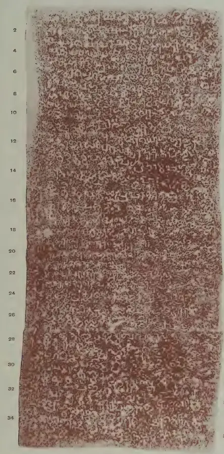
First Pillar : Back.
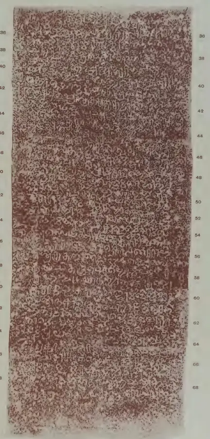
Second Pillar: Front.
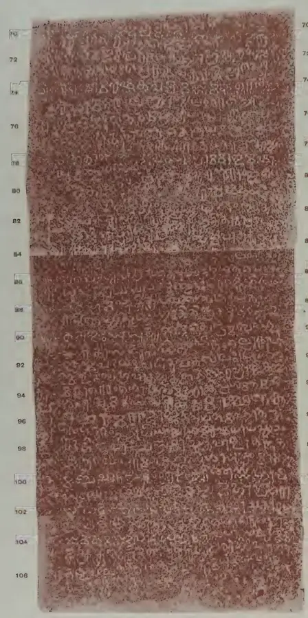
Second Pillar: Back.
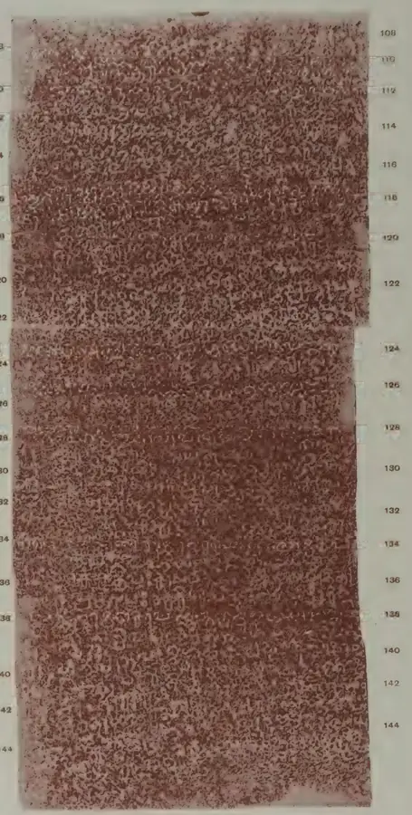
84 ककु[त्*]स्थाभिधाम् ।[१२*] पृथुवंवभूत्र कुले
85 [कुलाद्रिणा] समस्समस्तावनिपालवन्दितः [1*]
86 [विवेकधुस्त]नृपतौ1 स नन्दधु1न्नं वे[प]-
87 2धुन्नपि च याचधु[ञ्ज]नः3 ॥—[१३*] अमुष्मिन्वं-
88 [शे]भून्महति कुवलाश्रो नरपतिः स्फु-4
89 र[द्वी]र्येद्वर्यैरतिनिभृतमुत्भासि-5
90 ततनुः [*] स धुन्धुन्त्येन्द्रम् बहक-
91 सिकतासिन्धुपिहितं हितं लोकाया-
92 स्मै विदधदवधीदुष्टतबलः ॥—[१४*] वंशे-
93 स्मिन्नुत्बभूवात्भुत6महिमभरभ्राजितस्या-7
94 मरारेरंशो विश्वंभरात्तिप्रश्मनमनि-
95 शं कर्त्तुमुत्सिद्धकीर्त्तिः [1*] मान्याता8
96 नाम राजा जननयनमहानन्द-
97 स[दो]हजायो9 यस्याधर्मोक्षयाय व्यच-
98 रदतिजवात् चक्रमा चक्रवाढात् ॥—[१५*] त-
99 स्मिन्नृपे परमतेजसि शासतीमाम् भू-
100 मिच्चचार हरिणा हरिणस्सहापि [1*]
101 सर्वो मिथस्सहजमप्यज[हा]द्विरो-
102 धन्धर्मस्त्वधर्मविरहान्न तथा चकार ॥—[१६*]
103 उदयमिह दधानस्सत्10गुणैरेधमान-
104 स्सततमसदपाये वृद्धिमत्यन्ववाये [1*] उदजनि
105 मुचुकुन्दः कुन्दगौरैर्यशोभिः परिण-
106 त इव चन्द्रः शोभमानैर्मयूखैः11 ॥—[१७*]
1 [Read °विवे[क]यु like नन्दयु, वेपयु and याचयु which follow, must be the abstract nouns derived from the roots विविच् etc., by adding the termination अयुच्. But विविच् is not, according to the Dhātupātha, a twit root and hence the reading विवेकयु is very doubtful.—Ed.]
2 Read °यु°
8 Read युर्जनः.
4 [The correct reading appears to be नरपतिहं.]
5 Read °र्चुर्यं and मुद्गां.
6 Read °मुद्धभूवाहुतं.
7 The length of स्या is at the beginning of the next line. [We should have rather expected सुरारे and not मरारे.—Ed.]
8 Read मान्याता. The secondary ā symbol is at the beginning of the next line,
9 Read दायौ.
10 Read दु.
11 [The correct reading seems to be मानो मयूखः.]
Second Pillar : Second Side.
107 . . . . . . . . . . . . . . . . . . <|804|>
108 . . . . . . . . . . <|704|>
109 . . . . . . . . <|704|>
110 . . . . . . <|703|>
111 . . . . . <|704|>
112 . . . . . . . . . <|804|> बृप[स्तेषां स्व]र्गमतीव दुर्ग-
113 मकरोद्युद्वे ह[ता]नामपि ॥—[१८*] अस्मिन्वं-1
114 शेभवदभिभवब्रोजसा राज-
115 बृन्दं लब्धानन्दस्समितिषु हरिश्व-
116 न्द्रनामा नरेन्द्रः [1*] दि[त्]सामेकां दधदपि
117 नयन् कोशिकायान्धनायां2 स्वं व्य-
118 क्रीणात्तृणमिव तथा यस्मुपुत्रं कळ-
119 त्रम् ॥—[१८*] आसीदत्रान्ववाये सगर इति [नृ]-
120 पस्तर्जिताशेषभूपो येनार[व्ये]-
121 पि कामं हयमखनिकरे त्रासितो
122 देवराजः [1*] यत्पुत्राणाम् प्रभावा-
123 ज्ञवणजलनिधौ सागरत्वं प्रप-
124 वे शेषाणां वारिधीनामपि [स]क-
125 . . . स्मागरत्वञ्चकार ॥—[२०*] आसीद-
126 त्र [भ]गी[र*]थः क्षितिपतिर्वंशे स्ववं-
127 3[शो]इवानुडत्तुं कपिलप्रकोप-
128 दहनज्वालावलौभस्मितान् [1*] स्व[स्मि]-
129 न्धुं वसुधान्नयन्त्रिपथगाञ्चक्रे
130 स भागीरथीं मर्यानप्यमृतान्व्यधात्
131 सुरसरित्वा6रिप्रवाहस्पृशः ॥—[२१*] अन्व-
132 येत्र सुमहत्यवतीर्णः(:)[स्वर्व]भूपतिगु-
133 णैः परिपूर्णः [1*] सज्जनस्तुतिविरा-
134 जितवर्णः क्षमामरक्षदखिलामृतुप-
135 र्णः ॥—[२२*] इह समजनि भूपः सर्वश्लो-
136 कैकतीपः1 क्षपित[भुवनता]पश्चातिता-
137 रिप्रतापः [*] अरियु[वतिविलाप]स्यारि-2
138 3तोद्दामकोप[स्समिति4 वि]जयिचा[प*][प्राप्]तकी-5
139 र्तिर्दिलीपः6 ॥—[२३*] अस्मि[नंशच]तुष्टयेन
140 भगवान् वंशेज[नि]ष्ट प्रभुः [क्लि]ष्टां
141 [वी]क्ष्य वसुम्भरामतिबलैर्दृष्टै-
142 7[मंहा]राक्षसैः [*] [रामो लक्ष्म]णसं-
143 युतोथ भरतश्च[त्रुघ्न]युक्त[स्मृतद्दन्दं]
144 विष्णुभुजायुगदयतुला[मू]र्ज्जि[स्वलं][*] य-
145 द्ययौ ॥—[२४*] पितरि तनयवृत्तं भ्रातरि8 भ्रातृ-
Third Pillar : First Side.
146 वृत्तं युवतिषु पतिवृत्तं शात्र-
147 वे शत्रुव[न्त]म् [*] मुनिषु 9नृपतिवृत्त-
148 म् ब[ा]न्धवे बन्धुवृत्तं सकलम-
149 खिल[नाश]ः10 शिक्षवामास11 लोकम् ॥—[२५*]
150 [नो] कोपेन12 जघान राक्ष[सप]तिं का-
151 मेन13 न प्रेयसीं स प्रत्याहृतवा[न्*] म-
152 हीशचितं काढ्न्येन चक्रे परम् [*]
153 नो चेत्किन्तपसि स्थितं स म-
154 लये शूद्रं जघानासिना किं
155 वानत्ययकान्तिध[ल्यु]पचितान्त[त्या*]-
156 ज सोतां [द्रु]तम् ॥[२६*] सेतुं नेतुं क-
157 पिबलमसौ ब(न)न्धयन्नेकम-
158 श्वौ चक्रे वक्रेतरगुणनिधिर्द-14
159 र्मसेतूनयेषान् [*] केतुं हेतुं [वि]-
1 Read दीप :.
2 Read स्फारिती. [I would suggest बिलापैस्फारितीc as the more probable one.—Ed.]
3 The ē symbol of ती is at the end of the previous line.
4 [The correct reading is स्मृततc.]
5 [The text reads स्फीतकौc.]
6 Read कौर्तिर्दिलीपः.
7 Read मंहा.
8 [भ्रातृष् is the actual reading in the inscription.]
9 [तृपति is the actual reading in the inscription. The ē sign of vē at the beginning of l. 147 is at the end of l. 146.]
10 Read cनाथः
11 Read शिचयामास.
12 [न क्रीधेन is the actual reading.]
13 The ē symbol of mē is in the previous line.
14 Read cध्वंc.
160 ब्रुधविपदां व्यापदान्दानवोनां रामं
161 कामं कथयति जनस्सत्गुण[१*]नान्निधा[नं]1 ॥—[२७*]
162 अस्मिन्व[शे]जनि विदञ्चयन्नोजसा [रा]जबृ-
163 न्द[ञ्चो]की नाम क्षितिपतिरतिस्फीतराज-
164 न्यकालः [१*] यस्याशेषामवनिमवतो2
165 राजधानीमिव स्नां लीलोया-
166 ३नैस्तुलनमदधन्सर्वतः कानना[नि] ॥—[२८*]
167 विहरन् स हरप्रभः कदाचिन्मुनिबुद्धा4-
168 ध्युषि[तेषु का]ननेषु [१*] अनयद्विबु-
169 धाश्रयो विहारप्रतिलब्धाव-5
170 सरा[णि] वासरा[णि] ॥—[२९*] कदाचन मृग-
171 व्रजप्रमथनप्र[भु]ल्लादरञ्चचार6
172 [वि]पिनान्तरेष्वनतिभूरिसैन्यः [क्ष]-
173 मी [१*] तदा स मृगरूपिणा भटिति केन-
174 चिद्रक्षसा [हतो] हरितमन्वगात्
175 प्रकृतिदक्षिणो दक्षिणाम् ॥—[३०*] मृग-
176 न्तमनु[ग]च्छता प्रजविना शनैर्वा-7
177 जिना पृथुद्रमसमाकुलं विपि-
178 नमन्यदासादित8 [१*] न्त9मन्वयुरनारतं प्र-
179 विततप्रयाणोन्मुखा जवेन र-
180 भसोत्पतत्पृथुवरूथिनीना-10
181 यक्काः ॥—[३१*] तं हत्वा रजनिचरं स तत्र
182 भूपः कावेरीमनु विचचार भूरिचा-
183 रः [१*] क्षीरांभोनिधिमथनात् सुरै-
184 रवाप्तम् पीयूषम् भुवि सलिलच्छला-
185 [द्वहन्तीम्] ॥—[३२*] तत्र [स्ना]त्वा · · · · द्विजे-
1 Read सद्गुणानां निधानम्.
2 The secondary ā symbol of the letter tō is in the next line.
3 The ai symbol of nai is at the end of the preceding line.
4 The secondary ā symbol is engraved in the next line.
5 V looks like ब.
7 The secondary ā symbol is in the next line.
8 Read तम्.
10 The secondary ā symbol is in the next line.
• Read प्रफुल्लादरथचार.
• Read त०.
Kanyakumari Inscription of Vira-Rajendra : the 7th year.
Third Pillar : Front.
Third Pillar : Back.
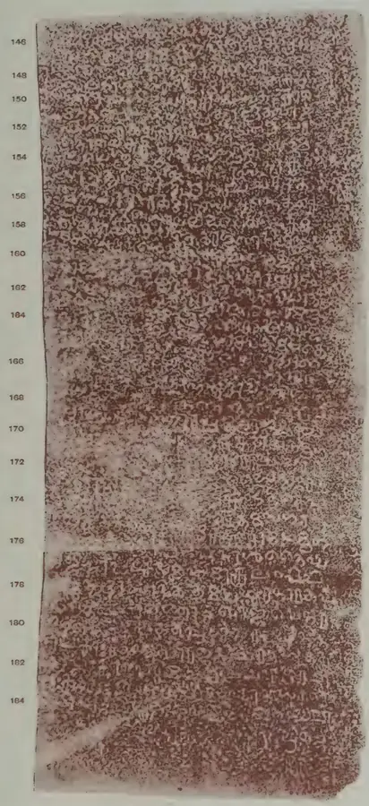
| 146 | 186 |
| 148 | 188 |
| 150 | 190 |
| 152 | 192 |
| 154 | 154 |
| 194 | 194 |
| 156 | 156 |
| 196 | 196 |
| 158 | 198 |
| 160 | 200 |
| 182 | 202 |
| 164 | 204 |
| 186 | 206 |
| 188 | 208 |
| 170 | 210 |
| 172 | 212 |
| 174 | 214 |
| 176 | 216 |
| 178 | 178 |
| 218 | 218 |
| 180 | 180 |
| 220 | 220 |
| 182 | 182 |
| 222 | 222 |
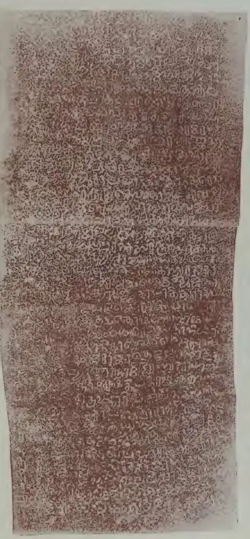
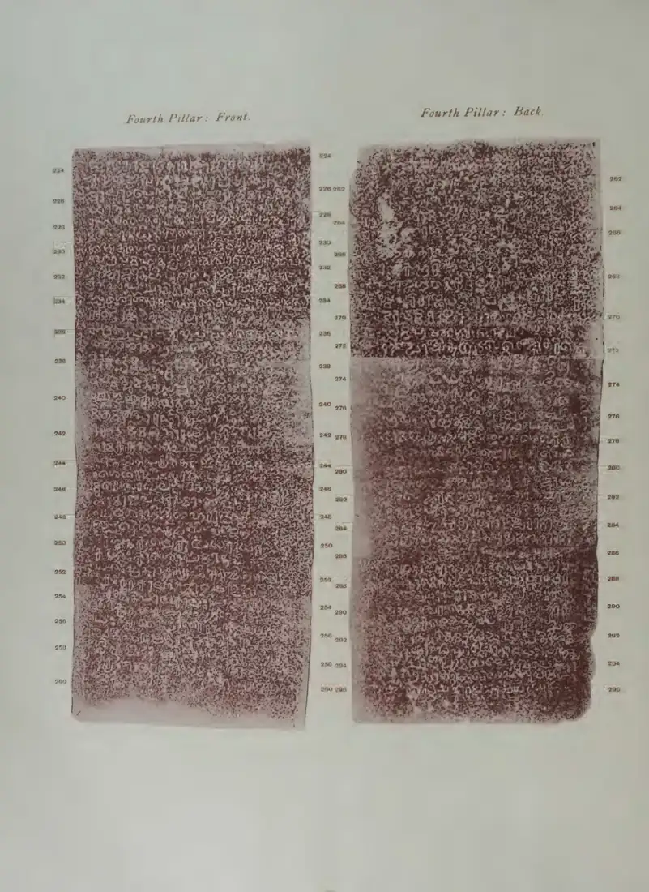
Third Pillar : Second Side.
186 [भ्यो] नापश्यत्तान्वश्यचित्त-
187 स्वदानोम् [*] आर्यावर्ताद्विप्रवर्या-
188 [नेनका]1नानीयाध्यावासयामा-
189 [म्] तीरे ॥—[३३*] विपिनमखिलं श्रित्वा2
190 पूर्गैश्वकार वनम्महत्तदनु वि-
191 [दधे धी]रस्मारं सनागलताकुल-
192 [म्] [*] उपवनचयैरन्यैः कवेर-3
193 सुतातटद्वयवसुमतीमेकच्छाया-
194 मनेकफलां व्यधात् ॥—[३४*] अमरस-
195 रि[ति] स्नानम् भूयस्तपश्चरणञ्जना
196 विदधति तटे तस्याः क्वच्छ्रात्तिविष्टप-
197 काम्यया [*] इह विरचितं स्नानं [घोरं]
198 तपश्च सुरालयादपि शुभतरे व[ा-
199 से व]ासं स्थिरोकुरुते सताम् ॥—[३५*] अन्वशा-
200 त्तमनु राजकेसरी वासराधिप इवा-
201 समयुतिः [*] चोक्तभूपतनयो नयात्4
202 [विभुः] चोणिमाजलधि 5वाहिताहितः ॥—[३६*]
203 त[सुत]स्तु परकेसरी वृपो मत्स-
204 री [तम]निवार्यशासनः [*] सत्सखः
205 . . . . . तासुरनिका-
206 रमयिमः ॥[३७*] अस्मिन्वंशे मृत्युजिव्रा-
207 म राजा मृत्योर्जेता पातितारातिव-
208 [र्गः 1*] [रे]जे6 यज्ञैराज्ञया च प्रका-7
209 म[न्देवां]च्छ[चू]न्तोषयन्8 भेषयं-
210 [च] ॥—[३८*] अस्मिन्वंशे वीरसेनाभिधा-
211 [नो जा]तो नीताशेषलोकाहित-
212 [स] [*] रेजे राजा तेजसा भानुतु-
1 Read ननेका.
2 Between °रन्यैः and कवेर two long syllables are wanting.
3 Read नयाद.
4 [This word may also be read ज ^.]
5 The secondary ā symbol is in the next line.
6 Read क्रित्वा.
[Perhaps °रन्यैस्सीयं might be suggested.--Ed.]
7 [The correct reading is तापिता.]
8 Read °श्च्छ्रवंशोषयन्
213 खः कल्याणानाम्रन्दिरं सुन्दरांगः ॥—[३८*]
214 चि[चो]भ्राम' क्षितिपतिरभूत्तत्र वंशे-
215 धिकश्रीवित्रस्तारिप्रकरविनतिव्यक्त-
216 विच्छिन्नकोपः [*] वृत्तारातिउर्भटिति२ स-
217 मरे तर्जितो यस्य बाणैर्मित्तो३-
218 भूतस्सततमभजद्व्याघ्रकेतुध्वजल-
219 म् ॥—[४०*] अवनिमखिलपारावारतीराभि-
220 रा[मा]म्४ परतत्तुविरतश्रीश्शासितुन्नाशि-
221 [तारिः] [*] निजभुजबललोलाकृष्टराजन्य-
222 लक्ष्मीरिह समजनि वंशे भूपति[ः पु*]ष्पके५-
223 तुः ॥—[४१*] अस्मिन्वंशे केतुमालाभि-
Fourth Pillar: First Side.
224 धानो जातो राजा जातशम्पाप्र-
225 काशः [*] ह्ल्वा सर्वक्ष्माभृतां [केतु]-
226 मालां येनावासं केतुमालाभि-
227 धानम् ॥—[४२*] समुद्रजिन्नाम नरा[धिराजो]६-
228 [भुवं]' . . . . . वोर्यः [*] पूर्वापरा-
229 म्भोनिधिमिश्रणेन [पण्ये]न . . . .
230 शस्तां [स]लो[भः]७ ॥[४३*] श्रीमत्य[त्र कुले]-
231 बभूव महितश्रीः पञ्चपाख्यो नृपो-
232 निर्व्याजातिथिपूजनोर्जितमना य[क्षा]-९-
233 न् स पञ्चातिथीन् [*] विद्वा पञ्च[सि]रा-
234 स्वशोणितमसौ तैर्याचित[स्माद]--
235 रं कोणन्तत् सकलानपाय[य*]त त्यजा[*]तस्तु-
236 [त*]त् पञ्चपः ॥[४४*] अभवन्विभवैर्ज्ञ-१०-
237 [य]न्दिगोशानिह वंशे नृपतिस्पृधांश-
238 कान्तः [*] नृमृडस्स मृडस्य सम्प्रसादाद-
१ Read चित्रो नाम.
२ Read र्भटिति.
३ Read ९मित्री.
४ [°रामे विरतिमविरत° appears to be the actual reading.]
5 The ā symbol of ā alone is in this line.
६ The secondary ā of the letter अो is in the next line. [Perhaps नराधिनाथ is the actual reading. Ed.]
७ [वंशेव विंशल are seen before वौर्यः..-Ed.]
८ Could the passage read स लेभे.
९ The secondary ā symbol is in the next line.
१० Read अभवद्विभवैर्ज्ञ°.
239 जयन्मृत्युमनत्ययप्रभावः ॥—[४५*] अत्रा[भूद]-
240 मलगुण[:*] कुलेतुलश्रोस्तेज[स्त्री स]-
241 मिति मनोरथाभिधानः [1*] यो इत्वा
242 भटिमि1 मनोरथानरोणाम् . . 2
243 नामकुरुत सत्फलात्3 बलेन ॥—[४६*]
244 एतस्मिन्परुनत्किक्किप्रभृतयो वं-4
245 शे धराधोश्वरा भूयांसस्तु जिता-
246 मरेश्वरवलश्रीविक्रमा जज्ञिरे [1*] ये-
247 षामाजलधिक्षमांसपतनव्याप्तं5
248 यशोभिश्शमैराब्रह्माण्डमख-
249 ण्डदेशसमयं विश्वन्जग[द्रा]जते6 ॥—[४७*]
250 अस्मिन् कुले कुलधराधरस[द्वि]-
251 काशः काशोपमान[विततोरु]-
252 यशःप्रतानः [1*] आसीत् क्षितीशतिल-
253 कः करिकालनामा चोक्समुत्थितरि-
254 पुक्षितिपालकालः ॥—[४८*] स काधेरो-
255 न्दूरीकृतसकलसस्यां विदधतीम् प-
256 यःपूरै'स्पारैरवनिम[विनीतो]-
257 इति[ह]रः [1*] प्रतीरोभूताभिर्वरपति8करा-
258 श्लिष्टपिटकप्रकीर्णाभिम्रमृत्भि9र्न्य[रुण]-
259 दरुणाग्रेसरसम[:] ॥—[४९*] [अस्मिन्कुले]
260 सकलपार्त्यैववन्द्यपादो [जातो]-
Fourth Pillar: Second Side.
261 भिजात[गुण[संहति . . . श्रोः] [1*]
262 [ऊ]जैस्वलोत्भुत10नि[जा]प्रतिमप्र-
263 ताप(र)सन्तापितारिश्लिभो11 व-
264 लभो महीशः ॥—[५०*] इहान्वये-
265 भूदमरेशतुल्यः परास्ताविद-
1 Read भटिवि.
2 Could the reading here be दीना° ?
3 Read सर्फलान्.
4 The anusvāra of वं is in the next line.
5 Read °चमं सतपनं ब्याप्तं.
6 Read विश्रंज्ञग°.
7 Read पूरैः स्फारैः
8 Read °नंरपति.
9 Read °र्वहि.
10 Read1 हुन.
11 Read ग्रलभो.
266 ज्जनतापशल्यः [1*] समस्तराजा-1
267 न्तकभूरि[भि]ल्लः2 क्षमाधिनाथो3
268 जगदेकमल्लः ॥—[५१*] वंशे-
269 स्मिन्नरिराजवन्दितपदद्वन्द्वारवि-
270 न्दक्षमि4 राजा [व्याल]भयंकर-5
271 स्ममभवत् — — ु — — रवेः6 [1*] दो-7
272 हंण्डाच्चित7खट्खखण्डितरिपो-8
273 यंस्योर्जितश्रीजुषः9 को-
274 पाग्निः10 द्विषदङ्गनाससलि-11
275 लैस्मातः12 परं शाम्यति ॥—[५२*] अन्व-
276 १३येत्र विजयालयनामा सम्ब-
277 भूव सकलक्षितिनाथः [1*] यत्प-
278 दाम्बुरुह्युग्ममजसं शेखरोक्त-
279 तमशेषमहीपैः ॥—[५३*] निवेश-
280 [या]मास स चोक्तदेशे नवीनता-14
281 शेषगुणप्रवृद्धां [1*] कञ्जास-
282 नायैरमरैः प्र[गी]तान्तञ्चाप-15
283 रीन्नाम पुरीं नरेन्द्रः ॥—[५४*] आदित्यवर्मा-16
284 भवदस्य पुत्रः कोदण्डरामाभि-
285 धया प्रसिद्धः [1*] उत्पत्य17 मत्तद्विरदे-
286 [षु]18संस्थञ्जघान यः पल्लवराजमा-19
287 जौ ॥—[५५*] अस्याभूत्तनयः पराक्र-
288 मवतामेकाधिपः क्षाभुजां वोर-
289 श्रीनिलयः परान्तक इति ख्यातः क्ष-
1 The secondary ā symbol is in the next line.
2 Read मल्लः.
2 The secondary ā symbol of धो is in this line.
4 Read ° क्षमी.
5 The reading व्याल is not quite certain ; it might also be देरि.
6 [The traces before this word would admit of the reading सुनी.]
7 Read दीर्दण्डाचितषड्ग.
8 The secondary ā symbol alone is in this line.
9 Read जुषः.
10 Read °ग्निर्द्विषद°.
11 The secondary āi symbol is in this line.
12 [For the existing traces, स्मिक्तः would be better.]
13 The secondary ā symbol of धे is in the previous line.
14 The secondary ā symbol is in the next line.
15 तज्जा would rhyme better with कञ्जा.
16 The letter मा looks like ला.
17 Read उत्पूत्य.
18 Read द्विरदेन्द्र.
19 The secondary ā symbol is in the next line.
290 माधीश्वरः [*] वेलीद्यानविहारि-
291 [भि]मंदकक्रैर्यद्वारणाधीश्वरै-1
292 वर्स्यन्ते मदसिन्धुभिः प्रतिदिशम्
293 पाथासि पाथोनिधेः ॥—[५६*] हत्वा
294 तु पाण्ड्यमखिलेन बलेन सा-
295 कं हत्वा तदीयमखिलं वसु वीर्यशा-
296 [ली *] भस्मीचकार मधुरां यदधःकृता-
Fifth Pillar : First Side.
297 रिक्षेभे2 ततस्स मधुरान्त-
298 कनामधेयम् ॥—[५७*] यज्जिगाय
299 विजयोपमद्युतिः क्षणराजमजि-
300 तन्नराधिपैः [*] भूरिविक्रम[विव]-
301 द्वितद्युतिर्व्वीरचोक इति ते-
302 न कोत्तर्यते ॥—[५८*] यत्तीर्णैर्ज्ज-
303 लनिधिमुद्धतैर्बलौ-
304 वै3स्यंयत्तान् समिति जघा[न]
305 सिंहक्षेशान् [*] तत् सर्वत्पिति4-
306 पतिवन्द्यमानपादस्मीन्वर्था5-
307 मभजत सिंहकान्तकाख्य[*]म् [॥—][५९*]
308 दृष्टान्तः कोस्य राज्ञस्मकलगु-
309 णनिधे[श्शन्यात्]6 कोस्य [वक्तु]-
210 म् 'भूयि[*]श्लाघ्यान् गुणौघा[न् युधि]
311 शमिति8रिपोर्व्विक्रमैकास्पदस्य [*]
312 यो9 विहद्विप्रभोग्याननुपम-
313 विभवान्वीरनारायणाद्या[नत्य]-
314 ग्यानग्रहाराग्व्यधित [विधि]रिव स-
315 गंमस्तारिवर्गैः ॥—[६०] अमुष्य तनयो
316 भवद्विभुररिन्दमाख्यो नृपः10
1 The ai symbols are in this line and r is in the next line.
2 Read 'रिलैभे.
3 The secondary ai symbols are in the previous line and gha in l. 304.
4 Read 'चि०.
5 ('he secondary ā symbol is in the next line.
6 Read 'शक्त्यात्.
7 Read भूय०.
8 Read शमित्.
9 The ē symbol alone of the letter यो is in this line.
10 The visaga is in the next line.
317 क्षपाकरसमयुतिः त्पपित1-
318 २वैरिपक्षोत्करः [1*] यदीयभुज-
319 विक्रमश्रवणसंभवत्साध्व-
320 सैन्टंपैरवनिभृत्गुहा-3
321 गृहनिवासिभिः[*] स्थीयते ॥—[६१*] अ[य]-
322 [म*]क्त[त च*] राज्ञः[*] स्वैरमाज्ञाविधे[या]-
323 न्व्यधित विधिसमानस्सम्पदं स-
324 ज्जनानाम् [1*] अतनुत नुतबीर्यो [व्या]-
325 पदं शात्रवाणामतुलयदतुल-
326 श्रीश्वन्द्रकान्तिं स्वकान्त्याः ॥—[६२*] अस्य
327 सूनुरभ[व*]त् परान्तकस्सन्ततक्षपि-
328 तवैरिसन्ततिः [*] चिन्तयन्यदुदयं स-
329 साध्वसः पाण्ड्यभूपतिरलंघय-
330 त्गिरिं ॥[६३*] चकार कारासु रिपूनशे-
331 षाम्स्ततार५ भूरीन्ममराम्बु[राशीन्] [1*]
332 जहार तापं बुधसंहतीना[न्त]ता-
333 [न] सन्तापमसज्जना[ना]म् ॥—[६४*] अखिल-
334 गुणनिधानात् भूमिपालादसुषा-
Fifth Pillar: Second Side.
335 दुदर्जान नरनाथो राजराजाभि-
336 धानः [*] [मदन*]रुचिरदेहः काम्त-
337 [ने*]चोरविन्दो [धनद इति] परं [यत्रा]-7
338 जराजेन तुल्यः ॥—[६५*] संजहार स-
339 मरे स पार्श्विवानुज्जहार विप-
340 दस्स भूतकात् [*] आजहार च मखान-
341 ८नेकशो व्याजहार [च] [स*] सूनृत . . त९ ॥—[६६*]
342 सत्याश्रये स्थिर[त]रे बत राजरा-
343 जे सत्याश्रयः किल पलायत मग्द-
1 Read चपित.
2 One of the secondary ē symbols is in the next line: Read क्षपत.
3 Read °भृदुहा.
4 Read °द्विरिम.
5 Read श्लेषांक्षार
6 Read नेचारविन्दो.
7 Read यो राज°.
8 The ē of nē is in the preceding line.
9 Could the passage here be read अः सूनृता गिरः ?
Kanyakumari Inscription of Vira-Rajendra : the 7th year.
Fifth Pillar : Front.
Fifth Pillar : Back.
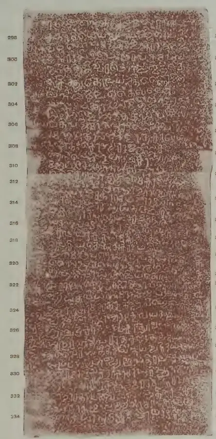
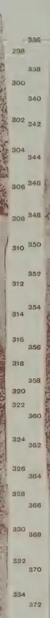
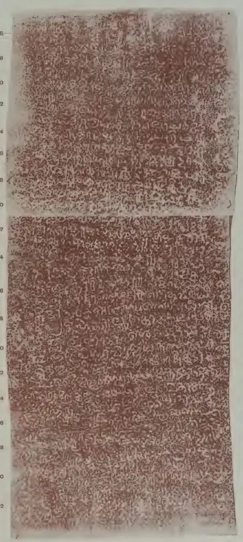
336
336
340
342
344
346
348
350
352
354
356
358
<|604|>|
362
364
<|366|>|
<|874|>|
Sixth Pillar: Front.
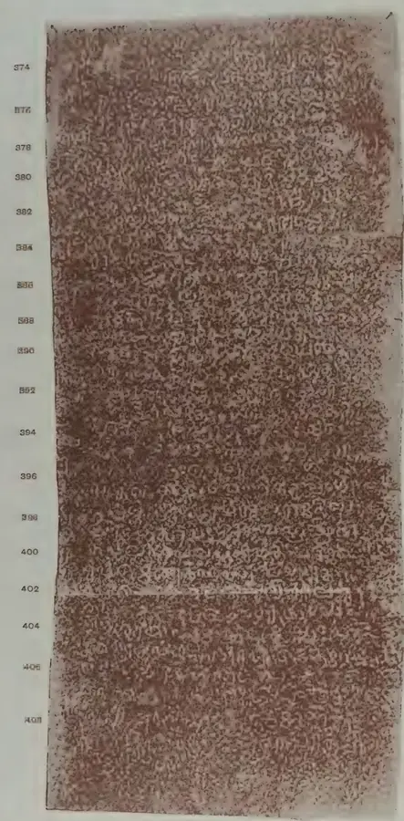
Sixth Pillar: Back.
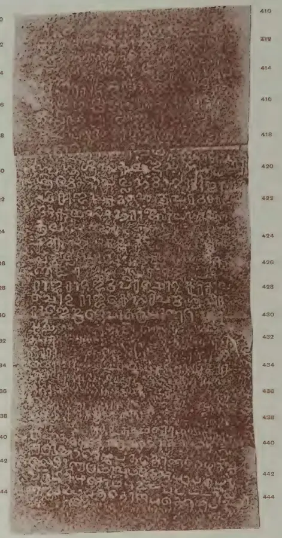
344 बुद्धिर्नत्या1 जयन्ति स[भ]या रिपव-
345 स्तमाजौ न त्याजयत्ययमसूनरि-
346 भिघ्रिश्रयस्तैः2 ॥—[६७] तस्य स्तुरन[त]-3
347 स्य शासिता पाकशासन इवारि-
348 शासन: [*] शंबरारि4[रु*]चिराकृतिर्नृप-
349 स्मम्बभूव मधु[रान्त]काभिधः ॥—[६८*]
350 अजयदजितवोर्यैः[*] . . . . . शालो5
351 विजय इव स[मस्तान्] कुन्तकानामधी-
352 शान् [*] अहरत स[किरीटं] क्षत्रियाणान्नि-
353 हन्तुः6 . . . . . [जामदग्न्य]-
354 [स्य] वीर्यात् ॥[६९*] जहार हारन्तुहि-
355 नांशका[न्तं] . . . . . तोर्विक्रम-7
356 निर्जितारि: [*] विहारभूमिं निजसै-8
357 निकानां स चाकरोत् संय-
358 ति मान्यकेटम् ॥[७०*] स्वसेनाधीशा-
359 नप्रतिष्ठतकुलूतोत्कलप(ति)-
360 ति: कलिंगान्विंशेन्द्रैस्स[ह]9
361 बहक्कवीर्यान्विदक्कयन् [*] स [गंगा]-
362 मुतज्जं10न्निजकरिघटापाति[त*]तटाम्11
363 घटैज्जंहे12 भूभृन्मकुटनिहि-
364 13तैरुद्धृतजलाम् ॥[७१*] उह्नंघिताम्बु-
365 धिभिरु[द्व]नबाहुवीर्यैर्नि[र्द्व]त-
366 [वैरि]नरनाथ[बल]प्रपद्यै-
367 स्तै[न्यै:*]14 कटाहमद[ह]यमन्यै15 राजेन्द्र-
385 राजराजेन्द्रदेवः शत्रुव्रातं व्य-
386 जयत जवात्10 बाह्यमाभ्यन्तरञ्च
387 हत्वा कूटलसंगमे क्षितिभृ-
388 तः मण्णाटवंशोत्भवान्11 सैन्यं
389 यज्ञभुजां प्रवर्धयति यस्तै-12
390 ईवभूयं13 गतैः [*] येनै-
391 केन . . . .
392 च्छोणितैः [क]त्वान्यां सरितं14
॥—[७५*]
1 Read ° स्रय.
7 Head सि.
. . . बलो निर्हत्य त-
2 Read ° नुजः चित.
Head द्.
368 चोक्कृप[तेः] किमसाध्यमस्य ॥—[७२*]
369 तस्यामंस्तनया[स्त्र]यस्रय1 इव
370 ख्याताः [क्रतोर]ग्नयस्तेषाम्नु प्र-
371 थमः क्षितीशतिलकी राजाधिरा-
372 जो नृपः [*] [यः*] कस्वाणपुरम्ददाह नृप-
373 ती[त्रिर्ज्जित्य] तन्नायकानादायाहव-
3 The secondary ā symbol is in the next line.
Head द्वं.
Sixth Pillar: First Side.
4 The secondary ā symbol of the letter मो is in the next line.
374 मल्ल . . . . .
375 . . . . . ॥—[७३] त[स्मि]-
376 न् गते त्रिदिव[मु*][ङ्कृ]तलोकशो-
377 कस्तस्यानुज2 क्षितिमिमामखिला-3
378 मरक्षत् [*] राजेन्द्रदेवनृपतिस्स
379 रिपूनशेषान् शेषोपमो4
380 नभगभुजः5 प्रक्यं व्यनै-
381 षीत् ॥—[७४*] तस्मिन्याते *क्षिदिवमनुज-
382 [स्तस्य] न'स्तेजितारिः प्राज्यं रा-
383 ज्यं व्यथित8 विधिवत् वीरराजेन्द्र-
384 देवः [*] अत्युत्भूतं9 समधिकवलो
5 Read ° पमोभयभुजः.
6 Read वि.
8 Read व्यधित° and वहीर°.
9 Read लुङ्गतं.
14 Read ° बंग्रोइवान्. The anusvāra of न्यं is in the next line.
12 The ā symbols of स्ते alone are in this line.
14 The anusvāra is in the next line.
393 समुद्रवनितां संतोषितो
394 वारि[धि:*] ॥—[७६*] भ्राह्रभ्यां समुपे-
395 क्षितं जनपदं वंशक्रमाभ्या-
396 गतं [क्रा]न्तं वैरिमहेश्वरै-1
397 रतिबलैर्वे गीन्कलिंगा-
398 नपि [*] जित्वा शत्रुपरम्परामतिव-
399 लां हित्वा च भीतान् बह्व्य्योमा-
400 न्वल्लभवल्लभक्षितिपतिः
401 क्षेमेण2 तं सोन्वसात्3 ॥—[७७*]
402 वोरचोढ्नृपतिः करिकालः का-
403 ल[य]न् कलिबलं सकलं सः [*]
404 धर्मशास[न*]समुच्चयमुच्चं व्या-
405 तनोति5 [हित]सारसमेतम् ॥—[७८*]
406 देवस्याद्रिसुताधिपस्य म[त][वि]-
407 [क्षे]लोक्यसाराभिधं श्रीमद्द-
408 भ्र[सभा]नटस्य मकुटे माणिक्य-
409 6[का]रोपितम् [*] मन्ये वैरिकुला-
Sixth Pillar: Second Side.
410 . . . . .
411 . . . . . ाम . . . . . [न्द] . . निजवश-
412 क्षतस . . . . . 7स्तानुस्सामारो-
413 पितः ॥—[७८*] चोढ्नृण्डीरपा-
414 ण्डोषु गंगावाटिकुलूतयोः8[*]
415 वीरराजेन्द्रना[म्ना*]सौ ब्रह्म-
416 देयान[क*]व्ययत् ॥—[८०*] चत्वारिंश-
417 त्सहस्राणि ब्राह्मणाना-
418 न्द्यौविदद9 [*] अतोषयत्10 भूमि-
419 दानैरस्थापयदतिस्थिरम् ॥—[८१*]
1 Read सद्दीप्तरै०; the āi symbols of रे alone are in this line and r in the next line.
2 The secondary ē of क्षे is in the previous line. 3 Read सोन्वशात्. 4 Read च.
5 [The reading appears to be त् सरस.] 6 Read मा ? [The reading seems to be भानु.—Ed.]
6 The secondary ā and the visarga of यः are in the next line.
9 Read न्वयौविदाम्. 10 Read अतोषयत्.
420 Svasti śri[ħ ||*] Sakala-bhuvan-āśraya
421 Śri-mē[di]ni-vallabha1 mahārājā-
422 dhirāja saka[la*]mahēntra parama-a-
423 shta-kula-siṅha rāja-kula-bhāvaka-
424 kula[śēkha]ra . . . . kul[ānta]-
425 ka Āha[vama]lla. . . la Āha-
426 vamallanai . . . . [đi-me]ṇ-ka-
427 ṇda Rājaśēkhara Rājāśraya
428 Rāja-Rājēndra Vira-Chōla Karikāla-
429 Chōla Rājakēsarivanma śri-Vira-
430 rājēndra-dēvarkku yāṇdu ēlā-
431 vadu te . . . . pat-
432 tiṇ . . . .
433 Vira-Rājēndra . . . .
434 mma rāva . . . . Rājarā-
435 [ja]p-Pāṇđi-nāt[ṭu] Uttama-Śōla-va-
436 ĵanāṭṭup-Puṭattāya-nāṭṭu Kumari-[k]ka-
437 ṇṇiyā-pidāriyārkku vēṇdum nityani-
438 vandaṅgaĵukku Chakkarava[t]ti [śri-Vira-Rā]jē-
439 ndra-[dēvar] kuṇutta Uttama-Śōla-vaĵanāṭ-
440 ṭu Puṭattāya-nāṭṭu Naṭrirākkuđi-nila-
441 ṇ ĵru-nūṭṭ-elubatt-oṇṭē-mukkā-
442 lē iraṇdu māvum in-nāṭṭu-pPeru-
443 ṅguđi kiĵkombu uṭpaṭta nila-
444 ṇ aiymbatt-oṇbadē-oṇbadi2
ABSTRACT OF CONTENTS.
Line 1. Be it well : Prosperity !
Verse 1. May the moon-crested Bhavānipati (i.e. Śiva), who is the sportive author of creation, protection and destruction, who is the master of speech, the only abode of omniscience (sarvajñatā) and by whose grace his devotees are enabled to cross the dangerous ocean of saṅsāra (metempsychosis), grant you good fortune.
V. 2. May Śambhu, who is full of grace towards moveable and immoveable objects, who holds one with his own body,—which is situated on the mountain (Kailāsa) and which is effulgent with light,—that of the great Māyā, who cheers the Universe, who establishes science and nescience (iñānu and ajñāna) and who is pleased with the happiness and distressed with the unhappiness of souls (jīv-ātman),3—may He save you easily from sin and protect you from downfall.
V. 3. He, who killed with his discus the hordes of the army of Asuras, who drove to the nether regions (pātāla) the emperor Bali and who is ever the protector of the Dēvas, may that Hari wipe off your sins by protecting the world through you who are so many portions of His own Self existing on earth.
V. 4. The Lord of all (Sarvēśvara), with a view to procreate the Universe, first ushered into existence water, which (is the primordial matter and which) is the fittest object for that purpose. Therein He sowed His eternal seed and raised from it the Mundane Egg, which envelops the three worlds. He also created Brahmā for bringing into existence all other things.
1 [The actual reading is mētanī.—Ed.]
2 The rest of the inscription cannot be traced.
3 [Who swells with the pleasures and pains of creatures willingly borne.—Ed.]
V. 5. This Brahmā who was thus begotten, having created all the worlds, containing every kind of thing, produced other Brahmās. One among such was Marichi who shone with a light which spread on all sides.
V. 6. Kāśyapa, who, with his omniscience, could perceive the subtlest things (paśyaka) was born of Marichi. His great beauty (Srī) was noticed by the eyes of Brahmā. He is reckoned as the first among the men of pre-eminence (śrēyas-sampatti). The constant fight among the Dēvas and others born of Kāśyapa, to own Prosperity appeared like the dashing against each other of the waves of the ocean (which bore Lakshmī).
V. 7. From him (Kāśyapa) was born the transcendent Vivasvān,1 who is the father of time, who by his generous light or power (prabhāva) which is capable of affording protection to the world, subordinates the planets, and by the contact with whose rays the lotus issuing from the navel of the Lord of all (Vishṇu) as also the lotuses, the faces of Brahmā, renounced sleep for the first time.
V. 8. When the rays of the sun began to dispel darkness from every quarter, the shining golden Brahmānda appeared as though (the gold) was emitting the flaws (kālimā) in it; and the disc of the sun looked like the pericarp of the Sky-lotus of which the petals were the directions of the compass, and the filaments the solar rays.
V. 9. The patriarch of all kings (who ruled over the earth later on) was Manu, the son of Vivasvān2; from whose connection the human race received the name Mānava. Manu was worthy of being praised by the world; he created and promulgated laws and made humanity happy. Vivasvān made his son Manu as resplendent as he did his father (Kāśyapa).
V. 10. To Manu was born Ikshvāku3, who had unblemished fame spreading in all quarters and sung by the hosts of Dēvas. The all-pervading prowess of this conquering king, having had no enemies (amitras) to conquer, vanquished the sun (Mitra, a word which means also “a friend”)
V. 11. Vikukshiśrava of high ideals of justice and of great intelligence was the son of Ikshvāku.4 This powerful king afforded protection to this earth. Kings used to acquire wealth by warring against each other, and they have now the casy method to attain it, namely to worship the feet of this king.
V. 12. The son of Vikukshiśrava was Purañjaya who subdued those king who offered him battle.5 Having transformed Indra into a bull, he stood on its high hump to conquer the Asuras; the gods in great joy addressed him as Kakutstha (he who stands on the kakud, hump of a bull), and this became thenceforth his name.6
V. 13. Prīthu, who was comparable to the great mountains (kula-parvatas) and who was respected by all other kings, was born in this family.7 During his regime all the people were wise and pleased. There did not exist then trembling (for fear) or beggary.
V. 14. In this great dynasty appreared the king Kuvalāśya. He was famous for his powerful horses. This powerful sovereign, in order to afford protection to the world, killed the Asura named Dhundhu, who had taken refuge in the sandy river Sindhu.8
Vv. 15-16. Of astounding greatness, the incarnation of Asurāri (Vishṇu), the king Mān-dhātri was born in this race9 to remove the distress of humanity residing on this earth.
1 See Kaliṅgattupparaṇi, Rāja-pārampariyam, v. 9; Vikkirama-Śōlaṇ-ulā ll. 1-6; Ep. Ind. Vol. XV, p. 59, vv. 6 & 7; South-Ind. Inscrs., Vol. III, p. 393, v. 4 and Arch. Survey of South India, Vol. IV, p. 206.
2 See Kaliṅgattupparaṇi, v. 10, Vikkirama-Śōlaṇ-ulā, ll. 6-8 and Kulōttuṅga-Śōlaṇ-ulā, ll. 2-4.
3 South-Ind. Inscrs., Vol. III, p. 393, v. 5.
4 South-Ind. Inscrs., Vol. III, p. 393, v. 6.
5 Ibid. v. 7.
7 Ibid. v. 12.
9 Ibid. p. 394, v. 16.
8 Ibid. v. 8.
9 Ibid. v. 14.
He afforded pleasure to the eyes of his subjects (by his personal appearance, perhaps). To drive off unrighteousness (adharma) his discus (chakra) travelled as far as the Chakravāla mountain. While this famous monarch ruled the earth, the lion and deer lived together amicably. All objects renounced their mutual hostility (that is, became friends); but dharma alone became an exception to this statement, for adharma did not exist (that is, it could not become a friend of adharma).
V. 17. The king Muchukunda of many good qualities was born of this race, which is never exposed to danger and which is ever prospering; this sovereign shone bright like the moon with his fame, which was white (unblemished) as the kunda (jasmine) flowers.1
V. 18. . . . . The king made it impossible for even those who fell in battle to enter heaven.
V. 19. In this family was born Harischandra, who subdued by his prowess hosts of kings and who delighted in war. Valuing them as a mere straw, he sold his own body and his wife and son to pay the money of Kauśika (Viśvāmitra).
V. 20. In this dynasty was a king named Sagara, who was dreaded by all other kings. When this monarch began to perform a number of aśvamēdha-yāgas, Indra began to tremble (lost his position be lost to Sagara by the virtue which he was going to acquire by his meritorious deeds). Owing to the greatness of the sons of Sagara, the salt oceans obtained the name sāgara, and this name began to apply to other seas also.
V. 21. Bhagiratha was born in this race. Having brought down from heaven the river Gaṅgā to raise his ancestors (the sons of Sagara) to heaven from the ashes to which they were reduced by the fire of the anger of the sage Kapila, he caused the celestial river to flow in three regions (that is, heaven, earth and hell) and the men who touched its waters to become immortal.
V. 22. Rituparṇa, who was full of kingly virtues and who possessed a fame which was praised by all good men, sprang from this dynasty and protected the earth.
V. 23. In this family was born king Dilipa; he was like a lamp to the universe; he had removed from the world misery and had destroyed the power of his enemies; his anger drew tears from the eyes of the queens of hostile kings (that is, if any hostile king excited his wrath, that king was sure to meet with his death at the hands of Dilipa). He was a famous sovereign whose bow was ever destined to be crowned with success.
V. 24. Seeing that the earth was groaning under the evil deeds of the powerful and wicked Rākshasas, the Lord of the Universe, Bhagavān, became incarnate in four different aspects as Rāma, Lakshmaṇa, Bharata and Śatrughna. The two first and last pairs of brothers resembled the right and the left pairs of arms of Vishnu.
V. 25. This universal Lord taught the world the modes in which a son should conduct himself towards his father, a brother towards his brother, a young man towards his wife, an enemy towards his enemy, kings towards Rishis and relations towards relations.
V. 26. It was not out of anger that he killed the king of the Rākshasas (Rāvaṇa); nor was it out of his (carnal) love for his wife that he rescued her (from her captivity under Rāvaṇa); he only discharged his duty, which as a sovereign he was bound to do. If it were not so, why then should he have killed a Śūdra who was doing penance on the Malaya mountain or soon after (rescue), abandoned his wife, Sitā, of resplendent beauty and rare courage?
V. 27. Śri-Rāma, of straight (uncrooked) virtues, had a bridge constructed across the sea for the army of monkeys to march over. (By his act of killing Rāvaṇa, a monster having evil ways), he firmly established all dharmas (dharma-sētu) on the earth. This Rāma, full of good qualities, is praised by men as the dhūmakētu (comet) to the misery of the gods (caused by the Rākshasas) and the source of chagrin to the Asuras.
1 South-Ind. Inscriptions, Vol. III, p. 393, v. 17.
V. 28-35. In this race there was a king named Chōla,1 To this king, by whom the world was governed as though it was but his capital city, the forests appeared like so many pleasure-gardens. Once upon a time this king, who was resplendent as Hara, was spending his time in sport within the forests inhabited by hosts of sages. At another time he strayed into other forests, with a band of his army, for the purpose of hunting deer; then was he allured by a Rākshasa, who had assumed the shape of a deer, and was beguiled into the southern regions. In the pursuit of this (pseudo-) deer the horse of Chōla took him gradually into another forest thickly studded with trees. The commanders of his rapidly marching army, who were prepared to accompany their sovereign to distant lands, kept pace with his swift horse. Having killed the deer-asura, the king began to march along the bank of the river Kāvēri. It seemed from the sweetness of her water that the river Kāvēri was carrying the very ambrosia (amrita) which the Dēvas churned (with great effort) out of the ocean. After bathing in her water, the king (looked for) Brāhmanas . . . . but found none in that region. Therefore, he brought a large number of Brāhmanas of superior virtues from the Āryāvarta and settled them down there (on the banks of the Kāvēri). He cleared the jungle and planted betel-vines and areca trees in large numbers. He created several other kinds of gardens, whereby the country was rendered shady (and cool) and also productive of fruits. People bathe in the river Gaṅgā and do penance in order to obtain svarga; but the bath in the Kāvēri and penance on her bank would take those who do them to regions higher than svarga.
V. 36. After him (Chōla) his son Rājakēsari,2 who was bright as the sun and who drove his enemies to the brink of the ocean, ruled the earth.
V. 37. . . . Rājakēsari's son was Parakēsari3 . . . .
V. 38. In this family there shone the king Mrityujit,4 who conquered Mrityu (Death). He felled the hosts of his enemies, pleased the Dēvas by the yāgas performed by him and made his foes tremble.
V. 39. The king Virasēna, who removed the sufferings of his subjects, who was respledent as the sun, who was the abode of all auspicious qualities and who possessed beautiful limbs, was born in this race.
V. 40. There was born in this dynasty a king named Chitra,5 whose anger would disappear if his enemies prostrated themselves before him. Being terrified in battle by the arrows of this king, Indra forthwith made friends with him and adopted Vyāghrakētu's [i.e. Chitra's] banner of tiger.
V. 41. Pushpakētu, who by the spell of his prowess playfully drew towards himself the wealth of all other kings, was born in this family to rule the earth as far as the borders of the seas.
V. 42. Kētumāla, who shone as bright as the lightning, was born in this race. Having seized the rows of standards (kētu-mālā) of other kings he came to be known by the name of Kētumāla.
V. 43. In this race was born a king named Samudrajit. He made the eastern ocean join the western one and as a prize for it obtained the hand of the daughter of a king in marriage.6
V. 44. Pañchapa, who delighted in treating guests, belonged to this family.7 Having been requested by five Yakshas, who came to him as guests, he cut open five arteries in his body
1 South-Ind. Inscrs. Vol. III, p. 394, v. 28 and Ep. Ind. Vol XV, p. 60, ; 12.
2 and 3 Ibid., p. 395, v. 30.
4 Ibid., p. 395, v. 86.
5 Ibid., v. 37.
6 Kalingattupparani, V. 18.
7 South-Ind. Inscrs., Vol. III, p. 394, v. 24.
and offered the blood issuing from them with great tenderness to the Yakshas to drink. From this act of hospitality he came to be known as Pañchapa.
V. 45. Surpassing the dik-pālas in greatness and similar to the moon in his splendour, king Nrīmṛīḍa was a member of this family. This king of undying fame conquered death by the grace of the god Paramēśvara.
V. 46. King Manōratha of unblemished character and of incomparable wealth was born in this dynasty ; he was powerful in war ; through having been able to destroy the desires of the enemies and fulfil those of his (friends and dependants) . . . . . he was dubbed Manōratha.
V. 47. Perunatkilli1 and other kings who surpassed Indra in strength, wealth and reputation, were born in this family. Their fame extended to the very borders of the earth and sea, and reached even the sun and the Brahmāṣḍa and was ever shining.
V. 48—49. Karikāla-Chōla, who was firm as the kula-parvatas, who possessed great fame, as white and unblemished as the flowers of the kāśa plant and who was Death to the hostile kings who met him in battle-field, was born in this family. Seeing that the river Kāvēri was overflowing its banks and not allowing crops to flourish, this monarch, who curbed the haughtiness of insubordinate kings, caused the embankment of this river to be constructed with the earth carried by (such insubordinate) kings in baskets on their hands, and afforded protection to cultivation.2
V. 50. In this dynasty was born the king Vaļabha,3 who possessed good qualities, wealth and prowess which compelled other kings to prostrate themselves before his feet ; he burnt with the flames of his admirable valour the insects (śalabha), his enemies.
V. 51. Jagadēkamalla, who was comparable to Indra, drove off poverty from learned men, and wielded the weapon called the bhalla (spear), which was Death to other kings, was born in this family.
V. 52. The king Vyāla (or Vairi ?)-bhayaṅkara was born in this family. The hostile kings prostrated themselves before his feet. The fire of the anger of this powerful king, who fought with the sword held in his long arm, could be quenched only by the tears flowing from the eyes of the queens of hostile kings.
V. 53-54. The lord of all the earth, the king Vijayālaya, was born in this family. All kings bowed before his feet. He established in the Chōla country the city of Tañjāpuri, which was praised even by Brahmā and other gods. Being a newly founded town, it flourished with all good qualities.4
V. 55. The son of this Vijayālaya was Ādityavarman, better known by the name of Kōdaṇḍa-Rāma. He fell on the Pallava monarch, who was seated upon a maddened elephant, and killed him in battle.5
V. 56-60. To him (Āditya) was born a son named Parāntaka, who was the abode of the goddess of valour (vīra-śrī). By the water flowing from the temples of the mast elephants of this king, which were sporting in the gardens adjoining the shores of the seas, the water of the seas became scented. Parāntaka destroyed the Pāṇdya king with his whole army, took all his
1 South-Ind. Inscriptions, Vol. III, p. 395, v. 41.
2 Ibid, v. 42.
3 Ep. Ind. Vol. XV, p. 60, v. 18.
4 वजयाषयोजनि तदन्वये जयौ विजिताखिलावनितलो महाशलः ।
प्रणमन्त्रपेन्द्रमकुटस्थलस्वलक्ष्मीणरमिरञ्जितपदाम्बुजधयः॥
Leiden Grant.
South-Ind. Inscrs. Vol. III, p. 396, V. 47 and 48.
wealth and burnt (his capital) Madhurā; for this achievement he received the title of Madhurāntaka.1 This king, who was as bright as Arjuna, conquered in battle the thitherto unconquered king Kṛishṇarāja, and thereby augmented his own glory. In recognition of this feat he was entitled Vira-Chōla. Parāntaka, who is respected by all kings, caused his army to cross the sea and defeat the king of Simhaḥa, who was waiting on the shore to give him battle, and thereby received the true surname of Simhaḥāntaka.2 Who could stand comparison with this king, the abode of all good qualities? Who can describe the traits of this monarch, who conquered his enemies in battle and who was the only residence for prowess? The destroyer of the enemies, Parāntaka, brought into existence superior villages of great wealth like Viranārāyaṇam,3 just as Brahmā created svarga, and caused them to be enjoyed by learned Brāhmaṇas.
V.v. 61-62. The son of this king (Parāntaka) was Arindama,4 of glory similar to that of the moon. He destroyed the power of his enemies. Many a king, who had heard of the valour of this sovereign, took refuge in mountain caverns. He brought all other kings under his sway; like Vidhi (Brahmā), he conferred riches upon good men; this king of reputed prowess caused grief to hostile kings. This sovereign of unparalleled beauty made the lustre of the moon comparable to his own splendour.
V.v. 63-64. Parāntaka,5 who always destroyed the hosts of his enemies, was born to Arindama. Taking into consideration the advent of this sovereign, the Pāṇdya king crossed the mountain and fled away. Parāntaka imprisoned all his enemies and fought successfully several battles. He satisfied the needs of learned men and was a terror to bad ones.
V.v. 65-67. To this monarch (Parāntaka), the abode of all virtues, was born the lord of men, Rājarāja.6 This king, who had a body as beautiful as that of Cupid and handsome lotus-like eyes, was comparable to Kuvēra (otherwise known as Rājarāja) only in his munificence.7 He killed in battle the enemy kings and rooted out evil from the earth. He celebrated several yāgas and was ever veracious. Satyāśraya, when he could have obtained strong support in Rājarāja, ran away senselessly from the battle-field.8 In fact, the terrified enemies of Rājarāja win him over in battle by quietly bowing before him; nor will he deprive such suppliants of their life or property.
V.v. 68-72. The king Madhurāntaka, who punishes those who do not submit to him, who chastises his enemies and who possesses a body as handsome as that of Cupid himself, was born as the son of Rājarāja. This monarch, as powerful as Arjuna, defeated all the kings of Kuntaḥa (Kuntaḥānām=adhīśān). This king, who wore a hāra on his neck, abstracted the glory of the moon (that is, caused the glory of the moon to wane before his own). Conquering hostile kings by the power of his arms, he made Mānyakhēṭa a sporting ground for his army. He caused the kings of the Kulūta and Utkala countries to be defeated by his generals; the
1 & 2 His achievements are described in South-Ind. Inscrs. Vol. III, p. 396, V.v. 51-52 & Ep. Ind., Vol. XV, p. 61, V. 21. See also Kalingattupparaṇi, Rājapāram, V.v. 22 and 23.
3 Compare: यामान्निवेश्य विविधान्नहतो यशोभिग्र्यभीषकार शरद्भनिमेर्दिगन्तान्।
Leiden Grant.
4 Ep. Ind. Vol. XV, p. 61, v. 23.
5 South-Ind. Inscrs. Vol. III, p. 396, V.v. 55 and 56.
6 He is said to have been born under the asterism, Śadaiyam, to have captured Udagai (Kalingat. v. 24 and Kulōtt. ll. 46-48) and to have taken Malai-nāḍu (Vikkiram. ll. 33-34).
7 King Rājarāja was a great giver of wealth (dhana+da), and in this respect resembled Kuvēra, who bore the name Dhanada. But Kuvēra was, as his name indicatee, ill-shaped in body while king Rājarāja was not. One of Kuvēra's eyes was yellow. Rājarāja, the king, had none of these drawbacks.
8 His conquests of Maṇṇai, Kiḍāram and Gaṅgai are mentioned in the Kalingat., v. 25, Vikkiram., l. 34-36 and Kulōtt. ll. 49-50.
kings of Kaliṅga and the Vimśēndra (?)1 were also vanquished by his generals, who reached the Ganges, whose banks slipped down the river through the battering of his elephant brigade; the water of the (holy) Gaṅgā was carried in pots on the heads of kings (to his capital city). He made his powerful army, which uprooted several hostile kings, cross the sea and set fire to Kaṭāha,2 which it was not possible for other kings to conquer. What act was impossible for this monarch Rājēndra-Chōla?
V. 73. This king had three sons, comparable with the three fires in a yāga. Of these, the preeminent Rājādhirāja was his first son. He set fire to Kalyānapura,3 defeated its king [and did something to king Āhavamalla, . . . . .].
V. 74. When this king went to heaven, his younger brother who removed the sorrow of the world, ascended the throne. Rājēndra-dēva, the monarch, who had arms resembling in shape the snake Ādi-Śēsha, killed all his enemies.
Vv. 75-81. When this sovereign also went to heaven, his younger brother Vira-Rājēndra who caused the valour of his enemies to wane, succeeded to the throne with due formality. He conquered not only his outside enemies, but also his own five senses.4 He killed the kings of the Maṇṇāta family (?) at Kūdalsaṅgama5; these kings augmented the army of the Dēvas (in the celestial world).6 The ocean was gratified by this king, who by killing hosts of men in battle-fields created a new river, a river of blood, and made her join her lord, the sea.7 The countries of Vēṅgi and Kaliṅga, which had been in his family for a long time, but, being abandoned by his elder brothers, were then in the occupation of his enemies, were recovered by Vallabha-vallabha8 by driving off some of those enemies and defeating others by the power of his arms, and were ruled over by him. Vira-Chōla (that is, Vira-Rājēndra), also known as Karikāla-Chōla, having deprived the world of the evils of the Kali age, established several dharma-śāsanas which afforded succour, were full of substance and were lofty in their aims. To the Lord of Pārvatī, who is dancing in Chirrambalam (Dabhra-sabhā), he made a gift of the valuable ruby known by the name of trailōkyasāra. He created several brahmadēya villages in the Chōla, the Tuṇdira, the Pāṇdya, the Gaṅgavātī and the Kulūta countries. He also furnished forty thousand Brāhmaṇas, well-versed in the Vēdas, with gifts of lands.
Ll. 420-445. In the seventh year (of the reign) of Rājakēsarivarman,—who bore the birudas and surnames the 'Asylum of the whole world,' 'Lord of the Earth,' Mahārājādhirāja, . . . . . Ashtakulasimha, Rājakula (?), [Ra]vikulaśekhara, Pāṇdyakulāntaka, Āhavamallakula-Kāla, he who defeated Āhavamalla
1 [See note 9 above, p. 45, Ed.]
2 South-Ind. Inscrs. Vol. III, p. 400, v. 117:—
विजितंसदीयतटभूमिनायकैः सलिलं तदीयस्य पावनं वरम्। निजनायकाय मधुरात्काय तस्ममनोनयत्सपदि दण्डनायकः।
3 Ibid., v. 123:—अवजित्य कटाडमुत्रतैर्निजदण्डेरभिलङ्घितायर्णवैः।
His conquest of Kalyāna and the planting of a pillar of victory are mentioned in the Kaliṅgattupparaṇi, v. 26, and Vikkirama-Śōlan-ulā II. 36-38.
4 "The outside and the inside enemies" is the expression employed in the text. The senses of sight, smell etc., are always considered the enemies of man, which reside in his own body.
5 Kaliṅgattupparaṇi, Rājapāram. v. 29 and Vikram. II. 42-44.
6 It is a belief that one who dies on the battle-field goes to heaven. The number of warrior kings who were despatched to the other world by Vira-Rājēndra-dēva being great, the army of the Dēvas must have been greatly strengthened by these new recruits.
7 The sea is considered to be the huaband of all rivers. Vira-Rājēndra caused a river of blood to flow from the multitude of human beings he killed in battles, and gave her in marriage to the sea, which pleased the latter very much.
8 So named because he subjugated the Vallabha (Chālukya) king.
five times,1 Rājasēkhara, Rājāśraya, Rāja-Rājēndra, Vira-Chōla and Karikāla-Chōla,— in Purattāya-nāḍu, a sub-division of Uttama-Šōla-valanāḍu in Rājarāja-Pāṇḍi-nāḍu. to the Kanyā-bhatārakī the land, two hundred and seventy-one and three-quarters and two mī (in extent) comprised in the village of Narrarāk-kuḍi in Purattāya-nāḍu in Uttama-Šōla-valanāḍu, together with Peruṅguḍi-Kilkombu in the same nāḍu, containing fifty-nine and nine mī of land by the emperor (chakravartti) śrī-Rājēndra-dēva.
944